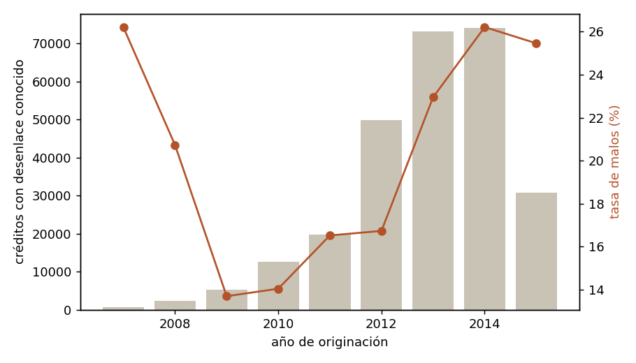
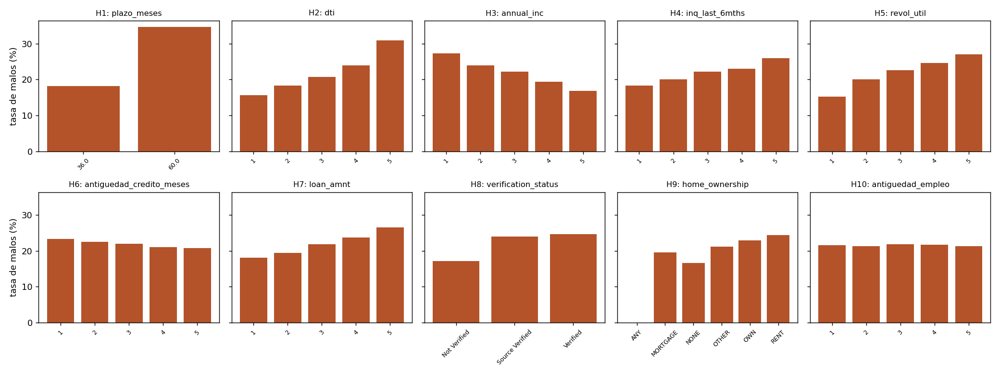
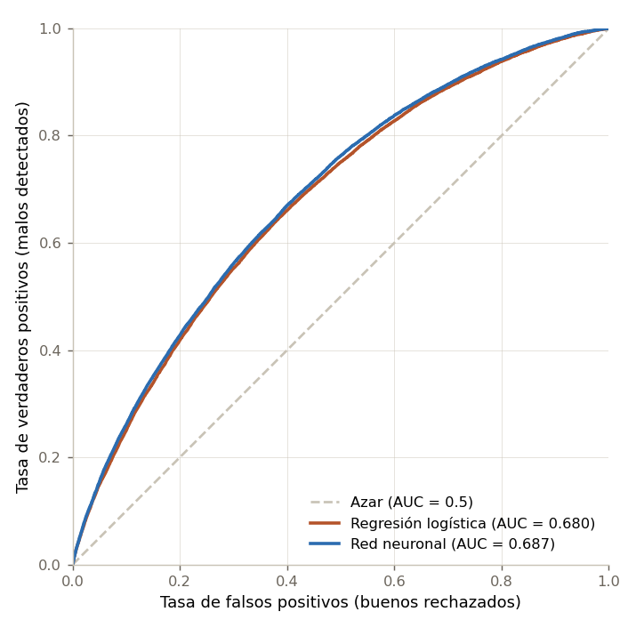
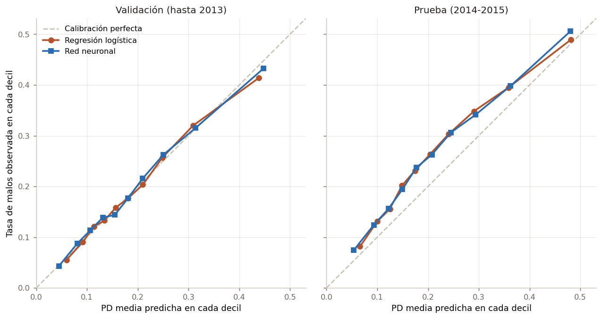
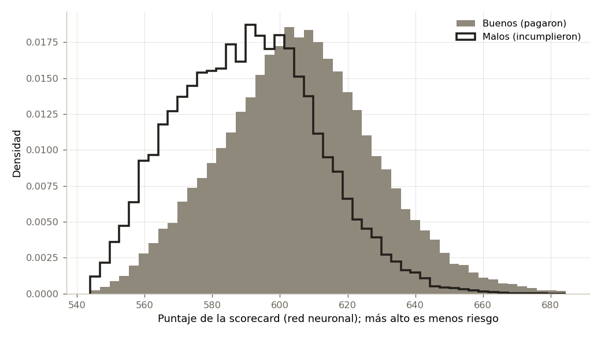
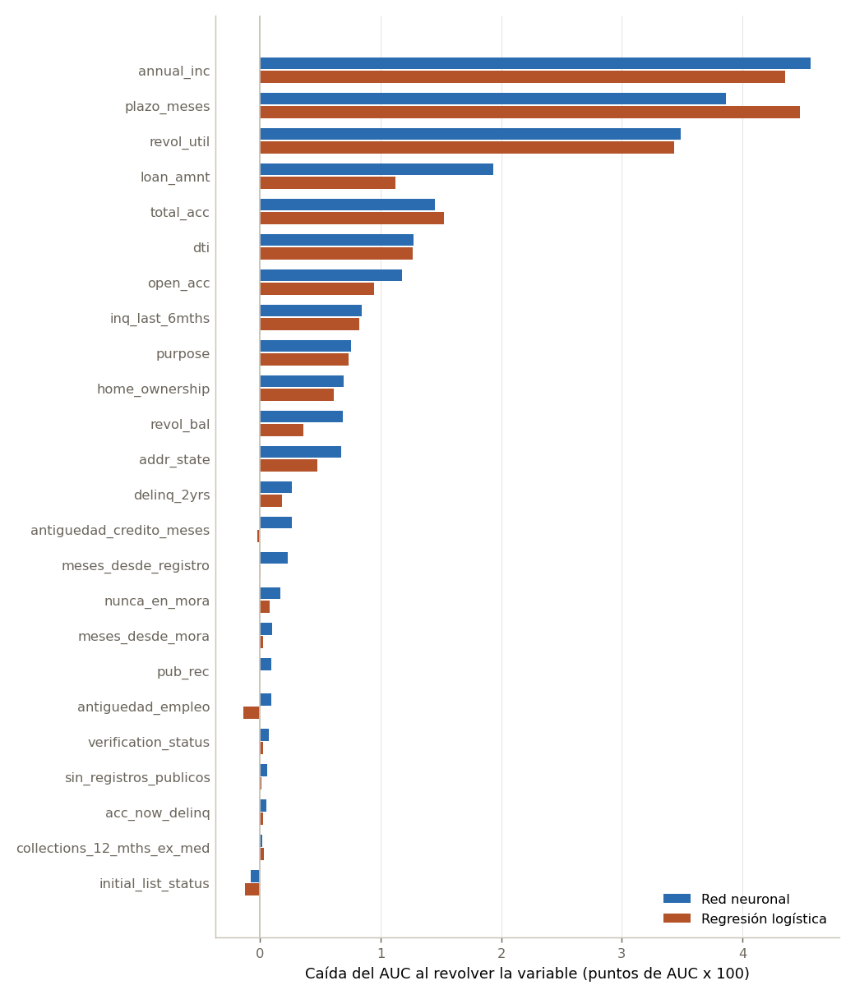
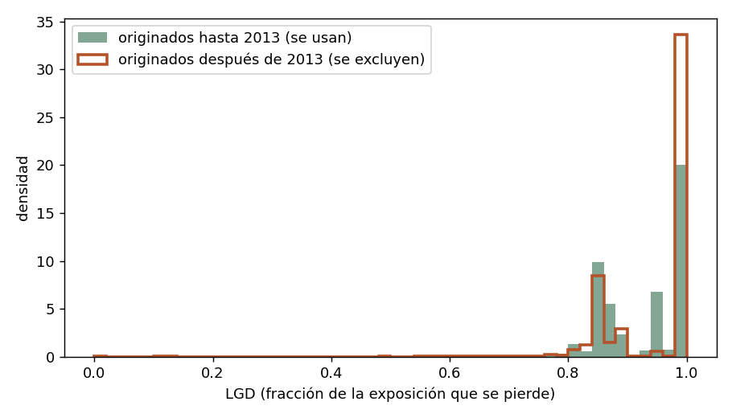
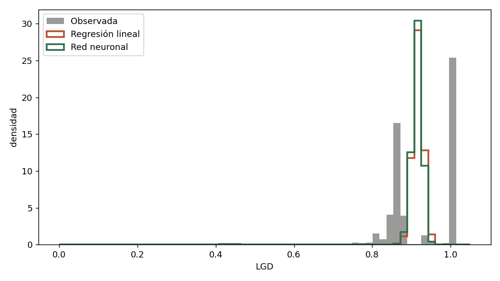

Probabilidad de incumplimiento, pérdida dado incumplimiento y una aplicación para conocer su puntaje
Noviembre de 2026
Antes de prestarle dinero a alguien, un banco se hace dos preguntas: qué tan probable es que no le paguen y, si no le pagan, cuánto va a perder. La primera es la probabilidad de incumplimiento (PD, por sus siglas en inglés), un problema de clasificación binaria. La segunda es la pérdida dado incumplimiento (LGD), la fracción de lo expuesto que finalmente se pierde, un problema de regresión. Juntas, con la exposición al incumplimiento (EAD), dan la pérdida esperada de cada crédito:
\[ \mathbb{E}[L] = \text{PD} \cdot \text{LGD} \cdot \text{EAD} \]
Es la misma descomposición del acuerdo de Basilea II, que define la pérdida esperada de una exposición como \(\text{PD} \times \text{LGD}\) y su monto como esa pérdida esperada multiplicada por la EAD (Basel Committee on Banking Supervision [BCBS], 2006, párrs. 375-376).
En este trabajo respondemos las dos preguntas con perceptrones multicapa y las comparamos, bajo las mismas condiciones, con un modelo simple: una regresión logística para la PD y una regresión lineal para la LGD. Las redes neuronales no siempre son la mejor herramienta para datos tabulares, así que el objetivo no es mostrar que la red gana, sino averiguar con evidencia qué aporta y qué no. Además, convertimos el modelo de PD en una scorecard y en una aplicación web en la que cualquier persona puede ver su puntaje.
Todas las decisiones de modelado del reporte se desprenden de esta descripción:
total_pymnt, recoveries,
last_pymnt_d…), porque el día de la solicitud no existen.
Tampoco la calificación (grade, sub_grade) ni
la tasa de interés o la cuota que asigna Lending Club, porque son el
resultado de su propio modelo de riesgo: usarlas sería copiar ese modelo
en lugar de construir el nuestro (sección 2.3).La sección 2 describe los datos y la variable objetivo; la 3, el análisis descriptivo y las hipótesis sobre qué hace más riesgosa a una persona; la 4, la fundamentación matemática de las redes, las pérdidas, el entrenamiento y las métricas. Las secciones 5 y 6 presentan los modelos de PD (con la scorecard y la interpretación de las variables) y de LGD, y la 7 los combina en la pérdida esperada. La 8 discute qué aportó la red frente a los modelos de referencia y qué aprendimos. Las secciones 9 y 10 cuentan cómo usamos la inteligencia artificial y qué errores suyos encontramos.
Usamos el conjunto Credit Risk Analysis publicado en Kaggle
(ranadeep, 2021), que reúne los créditos de consumo otorgados por la
plataforma estadounidense Lending Club. Lo descargamos el 26 de octubre
de 2026. El archivo loan.csv tiene 887 379 créditos y 74
variables. Los créditos se originaron entre junio de 2007 y diciembre de
2015, y el último pago registrado es de enero de 2016, así que lo que
sabemos de cada crédito es lo que había pasado hasta ese mes.
El conjunto trae un diccionario de variables
(LCDataDictionary.xlsx, hoja LoanStats), que
copiamos en datos/diccionario/ del repositorio. Las
definiciones de este reporte salen de ese diccionario y en la Tabla 2
están citadas textualmente, en inglés, como aparecen allí. Solo un
nombre no coincide: la columna verification_status del
archivo aparece en el diccionario como is_inc_v.
El archivo original pesa 442 MB y no cabe en el repositorio. Por eso
guardamos las tablas ya procesadas
(datos/procesados/pd.parquet y lgd.parquet)
junto con el código que las genera desde el original
(python preparar_datos.py, unos 20 segundos).
La variable objetivo malo sale de
loan_status con la codificación del enunciado: 1 si el
crédito se castigó, está en mora de más de 30 días o en
Default; 0 si se pagó completo. Los estados que todavía no
tienen un desenlace (Current, Issued, In Grace
Period y Late (16-30 days)) quedan como NA y no se usan.
La Tabla 1 muestra cuántos créditos hay en cada estado.
Tabla 1. Estados del crédito
(loan_status) y su codificación.
| loan_status | Codificación | Créditos |
|---|---|---|
| Current | NA | 601 779 |
| Fully Paid | 0 | 207 723 |
| Charged Off | 1 | 45 248 |
| Late (31-120 days) | 1 | 11 591 |
| Issued | NA | 8 460 |
| In Grace Period | NA | 6 253 |
| Late (16-30 days) | NA | 2 357 |
| Does not meet the credit policy. Status:Fully Paid | 0 | 1 988 |
| Default | 1 | 1 219 |
| Does not meet the credit policy. Status:Charged Off | 1 | 761 |
Fuente: elaboración propia con datos de Lending Club (ranadeep, 2021) y la codificación del enunciado.
Como se ve en la Tabla 1, la mayoría de los créditos todavía se estaba pagando en enero de 2016: 601 779 están en Current. En total, 618 849 créditos (69.7 %) quedan como NA. Con desenlace conocido quedan 268 530, de los cuales 58 819 son malos, una tasa de 21.9 %.
El modelo se usa cuando una persona pide el crédito, antes de aprobarlo (sección 1). Por eso solo entran variables que se conocen en ese momento: lo que la persona declara en la solicitud y lo que dice su reporte de crédito. La Tabla 2 muestra las 24 variables de entrada (19 numéricas y 5 categóricas), su definición en el diccionario, la transformación que les hicimos y el porcentaje de datos faltantes.
Dejamos por fuera cuatro grupos de variables:
total_pymnt, recoveries,
last_pymnt_d u out_prncp. En el momento de
decidir todavía no existen, y usarlas sería darle al modelo información
del futuro.grade, sub_grade,
int_rate e installment. El
diccionario define grade como “LC assigned loan
grade”: es la calificación que Lending Club le pone a cada crédito
con su propio modelo de riesgo, y la tasa de interés y la cuota dependen
de ella. Usarlas sería copiar el modelo de Lending Club en vez de
construir el nuestro. Las dejamos en las tablas procesadas para quien
quiera hacer esa comparación.tot_cur_bal, tot_coll_amt y
total_rev_hi_lim. Están vacías en todos los
créditos originados hasta 2011, en el 52 % de los de 2012 y completas
desde 2013. Si las usáramos, el modelo podría aprender el año del
crédito solo con mirar si están vacías.*_joint,
vacíos en el 99.9 %) y los open_* e il_*
(vacíos en el 97.6 %).A las variables que quedaron les hicimos estas transformaciones:
term (“36 months” o “60 months”) pasa
a número de meses, y emp_length pasa a años, con “<
1 year” como 0 y “10+ years” como 10, igual que lo
describe el diccionario.earliest_cr_line es una fecha; la convertimos en la
antigüedad de la historia crediticia en meses al momento del
préstamo.mths_since_last_delinq y
mths_since_last_record un vacío no es un dato perdido:
quiere decir que la persona nunca ha estado en mora o nunca ha tenido un
registro público. Por eso, antes de imputar, guardamos esa información
en dos indicadores, nunca_en_mora y
sin_registros_publicos. Así el modelo no confunde “nunca”
con “el valor mediano”.Todo esto está en riesgo/preparar.py y se ajusta
solo con el conjunto de entrenamiento: la mediana, la
media y la desviación de cada variable salen de ahí y se aplican sin
cambios a validación y prueba. Todos los modelos de una misma tarea usan
el mismo preprocesamiento.
Tabla 2. Variables de entrada, definición en el diccionario de Lending Club, transformación y porcentaje de faltantes.
| Variable | Columna original | Definición en el diccionario | Transformación | Faltantes |
|---|---|---|---|---|
| loan_amnt | loan_amnt | The listed amount of the loan applied for by the borrower. If at some point in time, the credit department reduces the loan amount, then it will be reflected in this value. | log(1 + x) | 0.0% |
| plazo_meses | term | The number of payments on the loan. Values are in months and can be either 36 or 60. | “36 months” -> 36 | 0.0% |
| antiguedad_empleo | emp_length | Employment length in years. Possible values are between 0 and 10 where 0 means less than one year and 10 means ten or more years. | “< 1 year” -> 0, “10+ years” -> 10 | 4.0% |
| annual_inc | annual_inc | The self-reported annual income provided by the borrower during registration. | log(1 + x) | 0.0% |
| dti | dti | A ratio calculated using the borrower’s total monthly debt payments on the total debt obligations, excluding mortgage and the requested LC loan, divided by the borrower’s self-reported monthly income. | 0.0% | |
| delinq_2yrs | delinq_2yrs | The number of 30+ days past-due incidences of delinquency in the borrower’s credit file for the past 2 years | 0.0% | |
| antiguedad_credito_meses | earliest_cr_line | The month the borrower’s earliest reported credit line was opened | meses entre esa fecha y la originación | 0.0% |
| inq_last_6mths | inq_last_6mths | The number of inquiries in past 6 months (excluding auto and mortgage inquiries) | 0.0% | |
| meses_desde_mora | mths_since_last_delinq | The number of months since the borrower’s last delinquency. | vacío = nunca (ver nunca_en_mora) | 55.2% |
| meses_desde_registro | mths_since_last_record | The number of months since the last public record. | vacío = nunca (ver sin_registros_publicos) | 87.1% |
| nunca_en_mora | mths_since_last_delinq | The number of months since the borrower’s last delinquency. | 1 si está vacío, 0 si no | 0.0% |
| sin_registros_publicos | mths_since_last_record | The number of months since the last public record. | 1 si está vacío, 0 si no | 0.0% |
| open_acc | open_acc | The number of open credit lines in the borrower’s credit file. | 0.0% | |
| pub_rec | pub_rec | Number of derogatory public records | 0.0% | |
| revol_bal | revol_bal | Total credit revolving balance | log(1 + x) | 0.0% |
| revol_util | revol_util | Revolving line utilization rate, or the amount of credit the borrower is using relative to all available revolving credit. | 0.1% | |
| total_acc | total_acc | The total number of credit lines currently in the borrower’s credit file | 0.0% | |
| collections_12_mths_ex_med | collections_12_mths_ex_med | Number of collections in 12 months excluding medical collections | 0.1% | |
| acc_now_delinq | acc_now_delinq | The number of accounts on which the borrower is now delinquent. | 0.0% | |
| home_ownership | home_ownership | The home ownership status provided by the borrower during registration. Our values are: RENT, OWN, MORTGAGE, OTHER. | 0.0% | |
| verification_status | verification_status | Indicates if income was verified by LC, not verified, or if the income source was verified | en el diccionario se llama is_inc_v | 0.0% |
| purpose | purpose | A category provided by the borrower for the loan request. | 0.0% | |
| addr_state | addr_state | The state provided by the borrower in the loan application | 0.0% | |
| initial_list_status | initial_list_status | The initial listing status of the loan. Possible values are – W, F | 0.0% |
Fuente: elaboración propia; definiciones copiadas de
LCDataDictionary.xlsx, hoja LoanStats (ranadeep, 2021).
Faltantes calculados sobre los 268 530 créditos con desenlace
conocido.
En la práctica el modelo se entrena con créditos del pasado y se usa con clientes nuevos. Para medir eso, la prueba es temporal: entrenamos y validamos con los créditos originados hasta 2013, y probamos con los originados en 2014 y 2015. Dentro de los años de entrenamiento, el 20 % va a validación, elegido al azar con la semilla 2026 y estratificado por la variable objetivo para que las dos partes tengan la misma tasa de malos. La validación se usa para la parada temprana y para elegir hiperparámetros; la prueba solo se mira al final. La Tabla 3 resume las tres particiones.
Tabla 3. Particiones para la probabilidad de incumplimiento.
| Partición | Créditos | Años | Tasa de malos |
|---|---|---|---|
| entrenamiento | 130 832 | 2007-2013 | 19.3% |
| validacion | 32 709 | 2007-2013 | 19.3% |
| prueba | 104 989 | 2014-2015 | 26.0% |
Fuente: elaboración propia
(riesgo/particiones.py).
La tasa de malos de la prueba (26.0 %) es bastante más alta que la de entrenamiento (19.3 %). La Tabla 4 y la Figura 1 muestran de dónde viene buena parte de esa diferencia: entre más reciente es el año, menos créditos tienen un desenlace conocido. De los originados en 2012, el 93.3 % ya había terminado en enero de 2016; de los de 2013, el 54.3 %; de los de 2014, el 31.5 %, y de los de 2015, apenas el 7.3 %. Un crédito a 36 meses otorgado en 2014 no alcanza a pagarse completo según el calendario antes de 2016. Los que ya tienen desenlace son los que terminaron antes de tiempo: o lo pagaron por adelantado o cayeron pronto en mora. Por eso, en los años recientes, los malos están sobrerrepresentados.
Tabla 4. Créditos por año de originación: cuántos tienen desenlace conocido, su tasa de malos y la proporción a 60 meses.
| Año | Partición | Originados | Con desenlace conocido | % con desenlace | Tasa de malos | A 60 meses |
|---|---|---|---|---|---|---|
| 2007 | entrenamiento y validación | 603 | 603 | 100.0% | 26.2% | 0.0% |
| 2008 | entrenamiento y validación | 2 393 | 2 393 | 100.0% | 20.7% | 0.0% |
| 2009 | entrenamiento y validación | 5 281 | 5 281 | 100.0% | 13.7% | 0.0% |
| 2010 | entrenamiento y validación | 12 537 | 12 528 | 99.9% | 14.0% | 26.9% |
| 2011 | entrenamiento y validación | 21 721 | 19 729 | 90.8% | 16.5% | 28.5% |
| 2012 | entrenamiento y validación | 53 367 | 49 813 | 93.3% | 16.7% | 12.8% |
| 2013 | entrenamiento y validación | 134 755 | 73 194 | 54.3% | 22.9% | 22.2% |
| 2014 | prueba | 235 628 | 74 154 | 31.5% | 26.2% | 27.5% |
| 2015 | prueba | 421 094 | 30 835 | 7.3% | 25.5% | 31.5% |
Fuente: elaboración propia con datos de Lending Club (ranadeep, 2021). “A 60 meses” se calcula sobre los créditos con desenlace conocido.

Figura 1. Créditos con desenlace conocido (barras, eje izquierdo) y tasa de malos (línea, eje derecho) por año de originación. Fuente: elaboración propia.
A este efecto lo llamamos sesgo de madurez. Con estos datos no podemos separar cuánto del aumento de la tasa de malos es un deterioro real del riesgo y cuánto es selección por madurez. Lo tenemos en cuenta de tres maneras:
Las alternativas, como cortar la prueba en 2013 o quedarse solo con créditos a 36 meses de años ya cerrados, dejan una prueba más limpia pero más vieja y más pequeña. Preferimos la partición que se parece al uso real del modelo y reportar el sesgo.
Antes de mirar los datos escribimos diez hipótesis sobre qué hace más
riesgosa a una persona. Cada una dice una variable y en qué dirección
esperamos que se mueva el riesgo. Están escritas tal cual en
descriptivo.py, en la lista HIPOTESIS.
Para probarlas comparamos la tasa de malos entre grupos, con los 268 530 créditos que tienen desenlace conocido:
Una hipótesis se confirma si la diferencia va en la dirección esperada y es de al menos un punto porcentual. Ese umbral no es arbitrario del todo. Cada quintil tiene unos 53 700 créditos, y con una tasa cercana al 20 % el error estándar de la diferencia entre dos quintiles es de \(\sqrt{2 \cdot 0.2 \cdot 0.8 / 53\,700} \approx 0.24\) puntos porcentuales. Un punto equivale entonces a unos cuatro errores estándar: una diferencia de ese tamaño difícilmente sale por azar.
Este análisis tiene dos límites. Mira una variable a la vez, así que una hipótesis puede confirmarse por culpa de otra variable relacionada; el plazo y el monto, por ejemplo, van de la mano. Además, muestra asociaciones, no causas. En la sección 5 volvemos a estas hipótesis con el modelo, que sí tiene en cuenta todas las variables al tiempo.
La Tabla 5 resume las diez hipótesis y la Figura 2 muestra la tasa de malos en cada grupo.
Tabla 5. Hipótesis sobre el riesgo y tasa de malos en los grupos comparados.
| Hipótesis | Qué esperábamos | Tasa de malos | ¿Se confirma? |
|---|---|---|---|
| H1 | Los créditos a 60 meses son más riesgosos que a 36 | 60 meses: 34.6% vs 36 meses: 18.1% | Sí |
| H2 | Quien ya debe más en proporción a su ingreso es más riesgoso | quintil 5: 31.0% vs quintil 1: 15.6% | Sí |
| H3 | A mayor ingreso, menor riesgo | quintil 5: 16.8% vs quintil 1: 27.3% | Sí |
| H4 | Muchas consultas recientes de crédito indican necesidad de plata y más riesgo | quintil 5: 26.0% vs quintil 1: 18.3% | Sí |
| H5 | Quien usa casi todo su cupo de tarjetas es más riesgoso | quintil 5: 27.0% vs quintil 1: 15.3% | Sí |
| H6 | Una historia crediticia más larga indica menos riesgo | quintil 5: 20.8% vs quintil 1: 23.3% | Sí |
| H7 | Los préstamos más grandes son más riesgosos | quintil 5: 26.5% vs quintil 1: 18.1% | Sí |
| H8 | Si el ingreso fue verificado, el riesgo es menor | Verified: 24.7% vs Not Verified: 17.1% | No |
| H9 | Quien arrienda es más riesgoso que quien tiene casa o hipoteca | RENT: 24.4% vs MORTGAGE: 19.6% | Sí |
| H10 | Más años en el mismo empleo, menos riesgo | quintil 5: 21.3% vs quintil 1: 21.5% | No |
Fuente: elaboración propia con datos de Lending Club (ranadeep, 2021).

Figura 2. Tasa de malos por grupo para cada hipótesis. En las variables numéricas, los grupos son quintiles (1 = valores más bajos). Fuente: elaboración propia.
Se confirman ocho de las diez. Las diferencias más grandes están en
el plazo (H1: 34.6 % de malos a 60 meses contra 18.1 % a 36) y en la
deuda frente al ingreso (H2: 31.0 % en el quintil más alto de
dti contra 15.6 % en el más bajo). Les siguen el uso del
cupo de las tarjetas (H5), el ingreso (H3), el monto del préstamo (H7) y
las consultas recientes de crédito (H4). En la Figura 2 se ve que en
todas estas la tasa sube o baja de forma ordenada de un quintil al
siguiente, no solo entre los extremos.
H6 se confirma, pero por poco: la diferencia es de 2.5 puntos (20.8 % contra 23.3 %). H9 también se confirma: quien arrienda tiene 24.4 % de malos y quien tiene hipoteca, 19.6 %.
H10 no se confirma. La tasa de malos es prácticamente la misma en todos los quintiles de antigüedad en el empleo (21.3 % en el más alto y 21.5 % en el más bajo). Saber cuántos años lleva alguien en su trabajo no ayuda, por sí solo, a separar buenos de malos.
H8 salió al contrario de lo esperado. Los créditos con ingreso verificado tienen más malos (24.7 %) que los no verificados (17.1 %). Nuestra primera sospecha fue el monto: si Lending Club verifica más a quien pide más plata, y los préstamos grandes son más riesgosos (H7), la verificación estaría heredando ese riesgo. La Tabla 6 lo revisa por quintil de monto.
Tabla 6. Proporción de créditos sin verificar y tasa de malos por estado de verificación, dentro de cada quintil del monto del préstamo.
| Quintil de monto | Monto máximo | Sin verificar | Malos: Not Verified | Malos: Source Verified | Malos: Verified |
|---|---|---|---|---|---|
| 1 | 6 250 | 51.9% | 16.5% | 18.5% | 21.3% |
| 2 | 10 000 | 45.6% | 16.8% | 20.7% | 22.3% |
| 3 | 14 400 | 38.3% | 17.0% | 25.3% | 24.4% |
| 4 | 20 000 | 27.7% | 18.1% | 26.2% | 25.6% |
| 5 | 35 000 | 5.3% | 21.4% | 27.0% | 26.7% |
Fuente: elaboración propia con datos de Lending Club (ranadeep, 2021). Montos en dólares.
Como muestra la Tabla 6, la sospecha era en parte cierta. La verificación depende mucho del monto: en el quintil más bajo la mitad de los créditos (51.9 %) no se verificó, y en el más alto solo el 5.3 %. Pero eso no explica todo, porque dentro de cada quintil los verificados siguen siendo más riesgosos que los no verificados: 21.3 % contra 16.5 % en el primero y 26.7 % contra 21.4 % en el quinto.
Concluimos que la verificación no se asigna al azar. Lending Club decide a quién se la pide, y si se la pide más a quien le parece más riesgoso por razones que no vemos en los datos, el grupo verificado carga con ese riesgo. Esto último es una conjetura: no encontramos una fuente primaria de Lending Club que describa su criterio de verificación, así que lo dejamos como pregunta abierta.
Para un modelo predictivo, “verificado” sí indica más riesgo y es correcto usarlo. Como consejo sería un error: no verificar el ingreso no hace a nadie mejor pagador. Por eso, en la aplicación, el “¿qué pasaría si…?” no debería sugerir cambiar el estado de verificación como forma de mejorar el puntaje.
Esta sección define todo lo que usan los modelos de las secciones 5 y 6: qué es una neurona y una red, de dónde salen las funciones de pérdida, cómo se calculan los gradientes, cómo se actualizan los pesos, cómo se regulariza y cómo se mide el resultado. La notación es la misma en todo el reporte: \(x_i \in \mathbb{R}^d\) son las \(d\) columnas de entrada del crédito \(i\) después del preprocesamiento (89 en la PD y 77 en la LGD), \(y_i\) es el valor observado (0 o 1 en la PD, una fracción entre 0 y 1 en la LGD) y \(\hat{y}_i\) es lo que predice el modelo.
Una neurona artificial recibe un vector de entradas \(x \in \mathbb{R}^d\), calcula una suma ponderada más un sesgo y le aplica una función de activación \(\varphi\):
\[ z = w^\top x + b = \sum_{j=1}^{d} w_j x_j + b, \qquad a = \varphi(z) \]
Los pesos \(w \in \mathbb{R}^d\) y el sesgo \(b \in \mathbb{R}\) son los parámetros que se aprenden; \(z\) es la preactivación y \(a\), la salida de la neurona. La idea viene del modelo de McCulloch y Pitts (1943), con salidas binarias, y del perceptrón de Rosenblatt (1958), que aprendía los pesos a partir de ejemplos.
Una sola neurona con activación sigmoide ya es la regresión logística de la sección 5: \(\hat{p} = \sigma(w^\top x + b)\). Lo que agrega una red es poner neuronas en capas.
Un perceptrón multicapa con \(L\) capas ocultas encadena neuronas en capas. La capa \(l\) tiene \(n_l\) neuronas; cada una recibe todas las salidas de la capa anterior. Con \(h^{(0)} = x\) y \(n_0 = d\):
\[ z^{(l)} = W^{(l)} h^{(l-1)} + b^{(l)}, \qquad h^{(l)} = \varphi\left(z^{(l)}\right), \qquad l = 1, \dots, L \]
donde \(W^{(l)} \in \mathbb{R}^{n_l \times n_{l-1}}\) es la matriz de pesos (la fila \(k\) son los pesos de la neurona \(k\)), \(b^{(l)} \in \mathbb{R}^{n_l}\) son los sesgos y \(\varphi\) se aplica a cada componente. La salida es una sola neurona con activación sigmoide:
\[ \hat{y} = \sigma\left(z^{(L+1)}\right), \qquad z^{(L+1)} = w^{(L+1)\top} h^{(L)} + b^{(L+1)} \]
Es lo que hace crear_red en riesgo/red.py:
capas=[128, 64] es \(L =
2\), con \(n_1 = 128\) y \(n_2 = 64\). El número de parámetros
entrenables es
\[ \sum_{l=1}^{L+1} (n_{l-1} + 1)\, n_l, \qquad n_{L+1} = 1 \]
Para la red de la PD (89 entradas, capas de 128 y 64) da \(90 \cdot 128 + 129 \cdot 64 + 65 \cdot 1 = 19\,841\), el número que reporta la sección 5. Para la de la LGD (77 entradas, capas de 64 y 32), \(78 \cdot 64 + 65 \cdot 32 + 33 = 7\,105\).
¿Por qué capas? Con una sola capa oculta, una activación de tipo sigmoide y suficientes neuronas, un perceptrón multicapa puede aproximar cualquier función continua sobre un conjunto compacto tan bien como se quiera (Hornik et al., 1989). Eso dice que la red puede representar relaciones no lineales entre las variables; no dice que las vaya a aprender con los datos que tenemos, ni que esas relaciones existan. Las secciones 5 y 6 miden cuánto ganamos con eso en la práctica.
La Tabla 7 resume las tres activaciones que usamos y sus derivadas, que son las que necesita la retropropagación (sección 4.5).
Tabla 7. Funciones de activación usadas, sus derivadas y dónde aparecen.
| Activación | \(\varphi(z)\) | \(\varphi'(z)\) | Rango | Dónde se usa |
|---|---|---|---|---|
| ReLU | \(\max(0, z)\) | \(1\) si \(z > 0\); \(0\) si \(z < 0\) | \([0, \infty)\) | Capas ocultas de la red de la PD |
| Tangente hiperbólica | \(\tanh z = \dfrac{e^{z} - e^{-z}}{e^{z} + e^{-z}}\) | \(1 - \tanh^2 z\) | \((-1, 1)\) | Capas ocultas de la red de la LGD |
| Sigmoide | \(\sigma(z) = \dfrac{1}{1 + e^{-z}}\) | \(\sigma(z)\,(1 - \sigma(z))\) | \((0, 1)\) | Neurona de salida de las dos redes |
Fuente: elaboración propia. Las activaciones de cada red salen de la búsqueda de hiperparámetros (secciones 5.2 y 6.3).
Algunos detalles que importan:
\[ \sigma'(z) = \frac{e^{-z}}{(1 + e^{-z})^2} = \frac{1}{1 + e^{-z}} \cdot \frac{e^{-z}}{1 + e^{-z}} = \sigma(z)\,\bigl(1 - \sigma(z)\bigr) \]
porque \(\dfrac{e^{-z}}{1 + e^{-z}} = 1 - \dfrac{1}{1 + e^{-z}}\). La usamos en la salida porque las dos cosas que estimamos están entre 0 y 1: la PD es una probabilidad y la LGD es una fracción. Como \(\sigma(z) \in (0, 1)\) para todo \(z\), la red nunca predice algo imposible, como una PD negativa o una LGD de 1.3. La sección 6 muestra que la regresión lineal sí puede salirse de ese rango.
Una función de pérdida no se escoge al gusto: cada una corresponde a un supuesto sobre cómo se generan los datos. Si suponemos un modelo probabilístico para \(y_i\) dado \(x_i\), con parámetros \(\theta\), el principio de máxima verosimilitud pide los \(\theta\) que hacen más probable lo observado. Con observaciones independientes, la verosimilitud es un producto, y es más cómodo maximizar su logaritmo:
\[ \hat{\theta} = \arg\max_\theta \prod_{i=1}^{n} f(y_i \mid x_i; \theta) = \arg\min_\theta \left[ -\frac{1}{n} \sum_{i=1}^{n} \ln f(y_i \mid x_i; \theta) \right] \]
El logaritmo no cambia dónde está el máximo porque es creciente, y dividir por \(n\) tampoco. Lo que queda entre corchetes, el negativo del logaritmo de la verosimilitud promediado, es la función de pérdida que se minimiza.
Entropía cruzada binaria, desde Bernoulli (PD). Si \(y_i \in \{0, 1\}\) y el modelo dice que la probabilidad de ser malo es \(\hat{p}_i\), entonces \(y_i \sim \text{Bernoulli}(\hat{p}_i)\):
\[ f(y_i \mid x_i; \theta) = \hat{p}_i^{\,y_i} (1 - \hat{p}_i)^{1 - y_i} \]
que vale \(\hat{p}_i\) si \(y_i = 1\) y \(1 - \hat{p}_i\) si \(y_i = 0\). Su logaritmo es \(y_i \ln \hat{p}_i + (1 - y_i) \ln(1 - \hat{p}_i)\), y con el signo menos y el promedio queda la entropía cruzada binaria:
\[ \mathcal{L}_{\text{BCE}} = -\frac{1}{n} \sum_{i=1}^{n} \Bigl[ y_i \ln \hat{p}_i + (1 - y_i) \ln (1 - \hat{p}_i) \Bigr] \]
Es lo que calcula nn.BCELoss() de PyTorch, que por
defecto promedia sobre el lote. Su derivada respecto a la preactivación
de salida es muy simple. Por la regla de la cadena, con \(\hat{p}_i = \sigma(z_i)\), para un
crédito:
\[ \frac{\partial \ell_i}{\partial \hat{p}_i} = -\frac{y_i}{\hat{p}_i} + \frac{1 - y_i}{1 - \hat{p}_i} = \frac{\hat{p}_i - y_i}{\hat{p}_i (1 - \hat{p}_i)}, \qquad \frac{\partial \ell_i}{\partial z_i} = \frac{\hat{p}_i - y_i}{\hat{p}_i (1 - \hat{p}_i)} \cdot \hat{p}_i (1 - \hat{p}_i) = \hat{p}_i - y_i \]
donde \(\ell_i = -[y_i \ln \hat{p}_i + (1 - y_i) \ln (1 - \hat{p}_i)]\). El factor \(\hat{p}_i(1 - \hat{p}_i)\) de la sigmoide se cancela. Por eso la sigmoide y la entropía cruzada van juntas: el gradiente es el error de predicción, sin ningún factor que lo apague cuando la sigmoide se satura.
Entropía cruzada con objetivo fraccional (LGD). En la LGD \(y_i \in [0, 1]\) no es 0 o 1, así que la Bernoulli no es una distribución posible para \(y_i\) y \(\mathcal{L}_{\text{BCE}}\) ya no es una verosimilitud. Es una cuasi-verosimilitud (Papke y Wooldridge, 1996): se usa la misma fórmula y lo único que se supone es que el modelo para la media, \(\mathbb{E}[y \mid x] = \hat{y}\), es correcto. La sección 6.2 muestra por qué basta con eso: la pérdida esperada se minimiza justo en \(\hat{y} = \mathbb{E}[y \mid x]\).
Error cuadrático, desde Gauss. Si suponemos \(y_i = \hat{y}_i + \varepsilon_i\) con \(\varepsilon_i \sim \mathcal{N}(0, s^2)\) independientes y \(s\) fija, entonces
\[ f(y_i \mid x_i; \theta) = \frac{1}{\sqrt{2\pi s^2}} \exp\left( -\frac{(y_i - \hat{y}_i)^2}{2 s^2} \right) \]
y el negativo del logaritmo de la verosimilitud es
\[ -\sum_{i=1}^{n} \ln f(y_i \mid x_i; \theta) = \frac{n}{2} \ln (2\pi s^2) + \frac{1}{2 s^2} \sum_{i=1}^{n} (y_i - \hat{y}_i)^2 \]
El primer término no depende de \(\theta\) y \(1/(2s^2)\) es una constante positiva, así que minimizarlo es lo mismo que minimizar el error cuadrático medio:
\[ \mathcal{L}_{\text{MSE}} = \frac{1}{n} \sum_{i=1}^{n} (y_i - \hat{y}_i)^2 \]
Es lo que optimiza la regresión lineal de la LGD (mínimos cuadrados)
y la red de la LGD con --set lgd.perdida=mse. Con una
salida sigmoide, su derivada respecto a \(z_i\) es \(\frac{2}{n} (\hat{y}_i - y_i)\, \hat{y}_i (1 -
\hat{y}_i)\) (el \(\frac{1}{n}\)
por el promedio y el 2 por el cuadrado). Aquí el factor de la sigmoide
no se cancela: cerca de 0 o de 1 la red aprende muy despacio, y en la
LGD el 45 % de los créditos de prueba tiene LGD = 1 (sección 6). Además,
la Gaussiana supone que \(y\) puede
tomar cualquier valor real, y la LGD no. Por las dos razones usamos la
entropía cruzada por defecto y dejamos el error cuadrático para
comparar.
Para minimizar la pérdida hace falta su gradiente respecto a cada peso. La retropropagación (Rumelhart et al., 1986) lo calcula aplicando la regla de la cadena de la salida hacia la entrada, capa por capa, y reutilizando lo que ya calculó.
Para un crédito, se define el error de la capa \(l\) como la derivada de la pérdida respecto a su preactivación, \(\delta^{(l)} = \partial \ell / \partial z^{(l)} \in \mathbb{R}^{n_l}\). El algoritmo tiene cuatro pasos:
\[ \delta^{(l)} = \left( W^{(l+1)\top} \delta^{(l+1)} \right) \odot \varphi'\left(z^{(l)}\right) \]
donde \(\odot\) es el producto componente a componente. Sale de la regla de la cadena: \(z^{(l)}_k\) afecta la pérdida a través de todas las neuronas \(j\) de la capa siguiente, con \(\partial z^{(l+1)}_j / \partial z^{(l)}_k = W^{(l+1)}_{jk}\, \varphi'(z^{(l)}_k)\), y por eso \(\delta^{(l)}_k = \sum_j \delta^{(l+1)}_j W^{(l+1)}_{jk}\, \varphi'(z^{(l)}_k)\). La suma sobre \(j\) es lo que escribe la matriz transpuesta.
\[ \frac{\partial \ell}{\partial W^{(l)}} = \delta^{(l)} \, h^{(l-1)\top}, \qquad \frac{\partial \ell}{\partial b^{(l)}} = \delta^{(l)} \]
Con un lote de \(m\) créditos y la
pérdida promediada, los gradientes son el promedio de los de cada
crédito. En el código todo esto lo hace
perdida_lote.backward(), que aplica estas mismas reglas
sobre el grafo de operaciones que PyTorch guardó en el paso hacia
adelante; optimizador.step() usa después esos gradientes
para actualizar los pesos (sección 4.6).
El descenso de gradiente más simple actualiza \(\theta \leftarrow \theta - \alpha\, g\), con \(g\) el gradiente del lote y \(\alpha\) la tasa de aprendizaje. Adam (Kingma y Ba, 2015) le agrega dos promedios móviles por parámetro: uno del gradiente (la dirección) y otro del gradiente al cuadrado (el tamaño típico). En el paso \(t\), con \(m_0 = v_0 = 0\):
\[ \begin{aligned} g_t &= \nabla_\theta \mathcal{L}(\theta_{t-1}) + \lambda\, \theta_{t-1} \\ m_t &= \beta_1 m_{t-1} + (1 - \beta_1)\, g_t \\ v_t &= \beta_2 v_{t-1} + (1 - \beta_2)\, g_t^2 \\ \hat{m}_t &= \frac{m_t}{1 - \beta_1^t}, \qquad \hat{v}_t = \frac{v_t}{1 - \beta_2^t} \\ \theta_t &= \theta_{t-1} - \alpha\, \frac{\hat{m}_t}{\sqrt{\hat{v}_t} + \epsilon} \end{aligned} \]
Las operaciones son componente a componente. Usamos los valores por defecto de PyTorch, \(\beta_1 = 0.9\), \(\beta_2 = 0.999\) y \(\epsilon = 10^{-8}\), y la tasa \(\alpha\) que eligió la búsqueda (\(3 \cdot 10^{-4}\) en la PD y \(10^{-3}\) en la LGD). El término \(\lambda\theta_{t-1}\) es la penalización \(L_2\) (sección 4.7).
Por qué cada pieza:
Comprobamos estas ecuaciones contra el código instalado de PyTorch
2.13.0 (torch/optim/adam.py): calcula el paso como \(\frac{\alpha}{1 - \beta_1^t} \cdot
\frac{m_t}{\sqrt{v_t}/\sqrt{1 - \beta_2^t} + \epsilon}\), que es
la misma expresión.
La búsqueda de la PD también probó RMSprop (Hinton et al., 2012), que es Adam sin el promedio del gradiente ni la corrección de sesgo: \(v_t = \rho\, v_{t-1} + (1 - \rho)\, g_t^2\) y \(\theta_t = \theta_{t-1} - \alpha\, g_t / (\sqrt{v_t} + \epsilon)\). Las diapositivas originales usan \(\rho = 0.9\); PyTorch usa \(\rho = 0.99\) por defecto, y ese es el valor con que corrió nuestra búsqueda.
Una red con miles de parámetros puede memorizar el ruido del entrenamiento. Usamos tres técnicas para evitarlo, y sus intensidades son hiperparámetros de la búsqueda.
Penalización \(L_2\). Se le suma a la pérdida el cuadrado de la norma de los parámetros:
\[ J(\theta) = \mathcal{L}(\theta) + \frac{\lambda}{2} \lVert \theta \rVert_2^2, \qquad \nabla_\theta J = \nabla_\theta \mathcal{L} + \lambda\, \theta \]
Así, los pesos grandes cuestan, y la red prefiere soluciones más
suaves. En el código es weight_decay=λ de PyTorch, que suma
exactamente \(\lambda\theta\) al
gradiente antes de entrar a Adam (la primera línea de las ecuaciones de
la sección 4.6). Hay dos detalles. Primero, se aplica a todos los
parámetros, sesgos incluidos. Segundo, como el término pasa por la
división entre \(\sqrt{\hat{v}_t}\), en
Adam no equivale a encoger cada peso en la misma proporción. Esa otra
versión, el weight decay desacoplado de AdamW (Loshchilov y
Hutter, 2019), no es la que usamos. La regresión logística también lleva
\(L_2\), con \(C\) como el inverso de su fuerza (sección
5.1).
Dropout. En cada paso de entrenamiento, cada neurona oculta se apaga con probabilidad \(q\), independiente de las demás (Srivastava et al., 2014). Con \(r_k \sim \text{Bernoulli}(1 - q)\):
\[ \tilde{h}^{(l)}_k = \frac{r_k}{1 - q}\, h^{(l)}_k \]
Dividir por \(1 - q\) hace que el
valor esperado no cambie: \(\mathbb{E}[\tilde{h}_k] = \frac{(1 - q)\, h_k}{1 -
q} = h_k\). Por eso, al predecir, el dropout se apaga y no hay
que corregir nada. Es lo que hace nn.Dropout(q) de PyTorch
entre red.train() y red.eval(). (El artículo
original no divide al entrenar, sino que multiplica los pesos por \(1 - q\) al predecir. En valor esperado es
lo mismo.) La idea es que ninguna neurona puede depender de que otra
esté presente. En la retropropagación, el gradiente pasa solo por las
neuronas que quedaron encendidas, multiplicado por el mismo \(r_k / (1 - q)\). La red de la PD usa \(q = 0.3\) y la de la LGD, \(q = 0\).
Parada temprana. Después de cada época se mide la pérdida en validación, \(\mathcal{L}_{\text{val}}(\theta_e)\). Se guarda la mejor época,
\[ e^* = \arg\min_{e' \le e} \mathcal{L}_{\text{val}}(\theta_{e'}) \]
y el entrenamiento se detiene en la primera época \(e\) con \(e - e^*
\ge P\), donde \(P\) es la
paciencia (\(P = 6\) en
config.yaml), o al llegar al máximo de 60 épocas. Al final
se recuperan los pesos \(\theta_{e^*}\). Regulariza porque la red
deja de ajustarse justo cuando empieza a mejorar en entrenamiento y a
empeorar en datos que no ve. Hay muchos criterios para decidir cuándo
parar (Prechelt, 1998); el nuestro, la paciencia, es uno de los más
simples. La decisión la toma la validación, nunca la prueba.
La Tabla 8 resume las métricas y qué miden. Las de clasificación
están en riesgo/metricas.py y se comprobaron a mano en un
caso pequeño (python pd_verificar.py).
Tabla 8. Métricas de evaluación usadas en el reporte.
| Métrica | Tarea | Qué mide | Rango | Mejor |
|---|---|---|---|---|
| AUC | PD | Discriminación: si los malos tienen PD más alta que los buenos | \([0, 1]\), 0.5 es azar | Más alto |
| Gini | PD | Lo mismo que el AUC, en otra escala | \([-1, 1]\), 0 es azar | Más alto |
| KS | PD | La mayor separación entre las PD de malos y de buenos | \([0, 1]\) | Más alto |
| Brier | PD | Calibración y discriminación juntas: el error cuadrático de la probabilidad | \([0, 1]\) | Más bajo |
| MAE | LGD | Error típico en unidades de LGD | \([0, \infty)\) | Más bajo |
| RMSE | LGD | Error típico, castigando más los errores grandes | \([0, \infty)\) | Más bajo |
Fuente: elaboración propia.
Curva ROC y AUC. Para un umbral \(t\), se predice “malo” si \(\hat{p}_i > t\). La tasa de verdaderos positivos es la fracción de malos que el umbral atrapa y la de falsos positivos, la fracción de buenos que rechaza sin razón:
\[ \text{TPR}(t) = \frac{\#\{i : y_i = 1,\ \hat{p}_i > t\}}{n_1}, \qquad \text{FPR}(t) = \frac{\#\{i : y_i = 0,\ \hat{p}_i > t\}}{n_0} \]
con \(n_1\) malos y \(n_0\) buenos. La curva ROC une los puntos \((\text{FPR}(t), \text{TPR}(t))\) al mover \(t\), y el AUC es el área bajo ella (Fawcett, 2006). Tiene una lectura más directa: es la probabilidad de que un malo tomado al azar tenga una PD más alta que un bueno tomado al azar, con los empates valiendo la mitad (Hanley y McNeil, 1982):
\[ \text{AUC} = \frac{1}{n_1 n_0} \sum_{i : y_i = 1} \sum_{j : y_j = 0} \left( \mathbb{1}[\hat{p}_i > \hat{p}_j] + \tfrac{1}{2}\, \mathbb{1}[\hat{p}_i = \hat{p}_j] \right) \]
Solo depende del orden de las PD, no de su valor. Por eso no cambia con la escala de la scorecard (sección 5.5).
Índice de Gini. \(\text{Gini} = 2\,\text{AUC} - 1\). Es el AUC reescalado para que el azar sea 0 y la separación perfecta, 1.
Estadístico KS. Es la mayor distancia vertical entre las distribuciones acumuladas de la PD de malos y de buenos, que en un umbral \(t\) son \(1 - \text{TPR}(t)\) y \(1 - \text{FPR}(t)\):
\[ \text{KS} = \max_t \bigl| \text{TPR}(t) - \text{FPR}(t) \bigr| \]
Es el estadístico de la prueba de Kolmogorov-Smirnov de dos muestras (Massey, 1951) aplicado a las PD de los dos grupos. En la curva ROC es la mayor distancia vertical entre la curva y la diagonal.
Puntaje de Brier. El error cuadrático medio de la probabilidad, con \(y_i \in \{0, 1\}\) (Brier, 1950):
\[ \text{Brier} = \frac{1}{n} \sum_{i=1}^{n} (\hat{p}_i - y_i)^2 \]
A diferencia de las anteriores, sí depende del valor de las PD: un modelo que ordena bien, pero dice 40 % donde la tasa real es 20 %, tiene buen AUC y mal Brier. Como referencia, predecir para todos la tasa de malos \(\pi\) de la partición da \(\text{Brier} = \pi(1 - \pi)\) (sección 5.4).
Curva de calibración. Se ordenan los créditos por PD predicha, se parten en diez grupos del mismo tamaño (deciles) y en cada uno se compara la PD media predicha con la tasa de malos observada. Si el modelo está bien calibrado, los puntos caen sobre la diagonal.
MAE y RMSE (LGD).
\[ \text{MAE} = \frac{1}{n} \sum_{i=1}^{n} \lvert y_i - \hat{y}_i \rvert, \qquad \text{RMSE} = \sqrt{\frac{1}{n} \sum_{i=1}^{n} (y_i - \hat{y}_i)^2} \]
Los dos están en unidades de LGD: un MAE de 0.076 quiere decir que, en promedio, la predicción se equivoca en 7.6 puntos porcentuales de la exposición. El RMSE es siempre mayor o igual que el MAE y lo es más cuando hay errores grandes, porque los eleva al cuadrado.
La derivación de la transformación de probabilidad a puntaje (puntaje base, odds de referencia y PDO), y cómo se reparten los puntos entre las variables, están en la sección 5.5, junto a los resultados que las usan.
Cuando llega una solicitud, el banco quiere saber qué tan probable es que esa persona no pague. Comparamos dos modelos para estimar esa probabilidad: una regresión logística y un perceptrón multicapa. Los dos usan las mismas particiones (Tabla 3) y el mismo preprocesamiento (sección 2.3), que convierte las 24 variables de entrada en 89 columnas. Se entrenan con los créditos originados hasta 2013 y se miden con los de 2014 y 2015.
Regresión logística (modelo de referencia). Supone que el logaritmo de las odds de ser malo es una suma ponderada de las entradas:
\[ \ln\frac{p_i}{1 - p_i} = \beta_0 + \sum_{j} \beta_j x_{ij} \]
Tiene 90 parámetros, uno por columna más el intercepto. Su único hiperparámetro es \(C\), el inverso de la fuerza de la penalización \(L_2\). Probamos cinco valores y elegimos por la pérdida en validación, como muestra la Tabla 9.
Tabla 9. Ajuste de \(C\) en la regresión logística.
| C | Pérdida en validación | AUC en validación | Iteraciones |
|---|---|---|---|
| 0.001 | 0.45623 | 0.684 | 24 |
| 0.01 | 0.45486 | 0.6875 | 57 |
| 0.1 | 0.45473 | 0.688 | 56 |
| 1 | 0.4547 | 0.6881 | 60 |
| 10 | 0.4547 | 0.6881 | 60 |
Fuente: elaboración propia con
python pd_entrenar.py.
Ganó \(C = 10\), pero \(C = 1\) y \(C = 10\) empatan a cinco decimales. Está en el borde de la rejilla y aun así no vale la pena ampliarla: con 130 832 créditos para 90 parámetros, la penalización casi no hace nada una vez es débil.
Red neuronal. Un perceptrón multicapa con una
neurona de salida con activación sigmoide, porque la PD es una
probabilidad, y entropía cruzada binaria como pérdida, que es la
verosimilitud de Bernoulli (sección 4). Usa el mismo bucle de la LGD
(riesgo/red.py): hasta 60 épocas y parada temprana cuando
la pérdida en validación no mejora en 6 épocas seguidas, recuperando los
pesos de la mejor época. La penalización \(L_2\) se aplica con el
weight_decay de PyTorch, que suma \(\lambda\theta\) al gradiente de todos los
parámetros, sesgos incluidos. Eso equivale a agregarle \(\frac{\lambda}{2}\lVert\theta\rVert^2\) a
la pérdida.
Sin pesos por clase ni sobremuestreo. Solo el 19.3 % de los créditos de entrenamiento son malos, y es tentador balancear las clases. No lo hicimos: eso cambia la proporción de malos que ve el modelo y sus probabilidades dejan de corresponder a la realidad. Van den Goorbergh et al. (2022) muestran, con regresión logística, que estas correcciones llevan a una mala calibración sin mejorar el AUC. Lo comprobamos con nuestros datos en la sección 5.7: con pesos por clase el AUC no mejora y la PD media en la prueba sube a 50.2 %, cuando la tasa real es 26.0 %.
La rejilla de config.yaml combina siete arquitecturas
([16], [32], [64], [32, 16], [64, 32], [128, 64] y [64, 32, 16] neuronas
en las capas ocultas), dos activaciones (ReLU y tanh), tres valores de
dropout (0, 0.1 y 0.3), tres de penalización \(L_2\) (0, \(10^{-5}\) y \(10^{-4}\)), tres tasas de aprendizaje
(\(3 \cdot 10^{-4}\), \(10^{-3}\) y \(3
\cdot 10^{-3}\)), tres tamaños de lote (256, 512 y 1024) y dos
optimizadores, en total 2268 combinaciones. Comparamos Adam (Kingma y
Ba, 2015) y RMSprop (Hinton et al., 2012) porque los dos funcionan en
ese mismo rango de tasas de aprendizaje; SGD necesitaría un rango propio
para que la comparación fuera justa.
Sorteamos 30 combinaciones sin repetir, porque con el mismo número de
intentos una búsqueda aleatoria explora más valores distintos de cada
hiperparámetro que una rejilla (Bergstra y Bengio, 2012). Cada una se
entrenó una vez con la semilla 2026 y se ordenaron por la pérdida en
validación. La búsqueda tardó 237 segundos y la prueba no se usó para
elegir. La Tabla 10 muestra las diez mejores; las 30 están en
resultados/pd/busqueda.md.
Tabla 10. Las 10 mejores de las 30 configuraciones de la búsqueda aleatoria, ordenadas por pérdida en validación.
| Intento | Capas ocultas | Activación | Dropout | L2 | Tasa de aprendizaje | Lote | Optimizador | Pérdida en validación | AUC en validación | Parámetros | Mejor época | Segundos |
|---|---|---|---|---|---|---|---|---|---|---|---|---|
| 3 | [128, 64] | relu | 0.3 | 1e-05 | 0.0003 | 256 | adam | 0.45006 | 0.6981 | 19841 | 24 | 17.9 |
| 6 | [64] | relu | 0 | 0 | 0.0003 | 1024 | rmsprop | 0.45014 | 0.698 | 5825 | 43 | 3.6 |
| 19 | [64] | relu | 0 | 0.0001 | 0.001 | 1024 | adam | 0.45028 | 0.6976 | 5825 | 14 | 1.7 |
| 28 | [64, 32] | relu | 0.1 | 0 | 0.001 | 1024 | rmsprop | 0.45038 | 0.6976 | 7873 | 18 | 5.4 |
| 27 | [32] | relu | 0 | 0.0001 | 0.0003 | 1024 | rmsprop | 0.45041 | 0.6975 | 2913 | 50 | 3.5 |
| 1 | [128, 64] | relu | 0 | 1e-05 | 0.001 | 512 | adam | 0.45065 | 0.6971 | 19841 | 6 | 2.7 |
| 14 | [32, 16] | relu | 0.1 | 1e-05 | 0.0003 | 256 | rmsprop | 0.45078 | 0.696 | 3425 | 29 | 11.1 |
| 12 | [64, 32, 16] | relu | 0 | 1e-05 | 0.003 | 512 | adam | 0.45101 | 0.6967 | 8385 | 6 | 2.6 |
| 13 | [16] | relu | 0 | 0.0001 | 0.001 | 256 | rmsprop | 0.45103 | 0.6955 | 1457 | 15 | 4 |
| 25 | [64] | relu | 0.3 | 1e-05 | 0.003 | 512 | rmsprop | 0.45114 | 0.6954 | 5825 | 8 | 3 |
Fuente: elaboración propia con
python pd_busqueda.py.
Las diez primeras usan ReLU; la mejor con tanh queda de undécima. Por lo demás, las configuraciones quedaron muy juntas: la pérdida va de 0.45006 a 0.45508.
Ganó la red de dos capas ocultas de 128 y 64 neuronas, con ReLU,
dropout de 0.3, \(L_2\) de \(10^{-5}\), tasa de \(3 \cdot 10^{-4}\), lotes de 256 y Adam, que
tiene 19 841 parámetros. Es la configuración final, en
pd.red de config.yaml. Pero ganó por poco: le
saca 0.00008 a la segunda, y al reentrenar la ganadora con 30 semillas
su pérdida en validación varía con una desviación de 0.00024. La
diferencia está dentro del ruido, y la segunda, una sola capa de 64
neuronas, tiene 5825 parámetros. No la cambiamos porque la regla era
elegir por validación, y decidir ahora, después de ver la prueba,
invalidaría la prueba.
Medimos la discriminación, es decir, qué tan bien ordena el modelo a los clientes, y la calibración, es decir, si sus probabilidades coinciden con lo que pasa:
La red final se entrenó con 30 semillas distintas (2026 a 2055). La Tabla 11 compara los dos modelos y la Tabla 12 cuenta en cuántas semillas gana la red.
Tabla 11. Métricas en la prueba (créditos originados en 2014 y 2015). Para la red: media ± desviación estándar en 30 semillas, con la mejor y la peor.
| Modelo | AUC | Gini | KS | Brier | Parámetros | Configuraciones | Corridas | Segundos |
|---|---|---|---|---|---|---|---|---|
| Regresión logística | 0.6797 | 0.3594 | 0.2619 | 0.1795 | 90 | 5 | 1 | 2.1 |
| Red neuronal | 0.6878 ± 0.0012 (mejor 0.6911, peor 0.6842) | 0.3757 ± 0.0025 (mejor 0.3821, peor 0.3684) | 0.2732 ± 0.0024 (mejor 0.2795, peor 0.2683) | 0.1781 ± 0.0003 (mejor 0.1774, peor 0.1787) | 19841 | 1 | 30 | 525.1 |
Fuente: elaboración propia con
python pd_entrenar.py. “Configuraciones” cuenta las que se
probaron en este script; la búsqueda de la red son 30 más (Tabla
23).
Tabla 12. La red frente a la logística, semilla por semilla.
| Métrica | Logística | Red (media) | Red - logística | Semillas en que gana la red |
|---|---|---|---|---|
| AUC | 0.6797 | 0.6878 | +0.0081 | 30 de 30 |
| Gini | 0.3594 | 0.3757 | +0.0163 | 30 de 30 |
| KS | 0.2619 | 0.2732 | +0.0113 | 30 de 30 |
| Brier | 0.1795 | 0.1781 | -0.0015 | 30 de 30 |
Fuente: elaboración propia con
python pd_figuras.py.
La red gana en las cuatro métricas y en las 30 semillas: hasta la peor (AUC 0.6842) supera a la logística (0.6797). Las semillas miden cuánto cambia la red al reentrenarla, pero no si la diferencia aguantaría con otros créditos. Para eso remuestreamos los créditos de la prueba 200 veces: entre la red guardada y la logística, la diferencia de AUC es +0.0072, con un intervalo bootstrap del 95 % de +0.0054 a +0.0087. No incluye el cero, así que la diferencia no parece un accidente de la muestra. También es pequeña. En la Figura 3 las dos curvas ROC casi se tocan, y en el 10 % de créditos que cada modelo ve más riesgoso la tasa de malos es 50.6 % con la red y 48.9 % con la logística (Tabla 14).

Figura 3. Curvas ROC de la regresión logística y de
la red guardada en la prueba. Fuente: elaboración propia con
python pd_figuras.py.
La mejor semilla llegó a un AUC de 0.6911, pero no se puede escoger
de antemano: lo que se puede esperar de la red es la media, 0.6878. La
red que guardamos para la aplicación es la de menor pérdida en
validación (semilla 2035), y en la prueba le fue por debajo de la media,
con 0.6868. No es mala suerte de esa semilla: entre las 30, la
correlación entre el AUC de validación y el de prueba es de −0.09
(resultados/pd/semillas.csv). Entre semillas de una misma
configuración, validación no anticipa cuál será mejor en 2014-2015.
La Figura 4 compara la PD predicha con la tasa de malos por deciles, en validación y en prueba. La Tabla 13 muestra las métricas en cada partición y la Tabla 14, los valores de los deciles.

Figura 4. Curva de calibración por deciles de PD
predicha, en validación (izquierda) y en la prueba (derecha).
Fuente: elaboración propia con
python pd_figuras.py.
Tabla 13. Métricas de la logística y de la red guardada en cada partición.
| Partición | Modelo | Créditos | AUC | Gini | KS | Brier | PD media predicha | Tasa de malos |
|---|---|---|---|---|---|---|---|---|
| Validación (hasta 2013) | Regresión logística | 32 709 | 0.6881 | 0.3761 | 0.2765 | 0.1442 | 19.4% | 19.3% |
| Validación (hasta 2013) | Red neuronal | 32 709 | 0.6994 | 0.3988 | 0.2940 | 0.1427 | 19.2% | 19.3% |
| Prueba (2014-2015) | Regresión logística | 104 989 | 0.6797 | 0.3594 | 0.2619 | 0.1795 | 21.9% | 26.0% |
| Prueba (2014-2015) | Red neuronal | 104 989 | 0.6868 | 0.3737 | 0.2702 | 0.1782 | 21.8% | 26.0% |
| Prueba, solo 2014 | Regresión logística | 74 154 | 0.6835 | 0.3670 | 0.2681 | 0.1800 | 21.7% | 26.2% |
| Prueba, solo 2014 | Red neuronal | 74 154 | 0.6899 | 0.3798 | 0.2750 | 0.1787 | 21.6% | 26.2% |
| Prueba, solo 2015 | Regresión logística | 30 835 | 0.6709 | 0.3418 | 0.2512 | 0.1785 | 22.3% | 25.5% |
| Prueba, solo 2015 | Red neuronal | 30 835 | 0.6799 | 0.3597 | 0.2609 | 0.1770 | 22.3% | 25.5% |
Fuente: elaboración propia con
python pd_figuras.py.
Tabla 14. PD media predicha / tasa de malos observada, por decil de PD predicha.
| Decil | Red neuronal, Prueba | Red neuronal, Validación | Regresión logística, Prueba | Regresión logística, Validación |
|---|---|---|---|---|
| 1 | 5.4% / 7.4% | 4.4% / 4.3% | 6.6% / 8.2% | 5.9% / 5.5% |
| 2 | 9.3% / 12.4% | 8.1% / 8.7% | 10.0% / 13.1% | 9.1% / 9.0% |
| 3 | 12.2% / 15.6% | 10.7% / 11.4% | 12.5% / 15.5% | 11.4% / 12.1% |
| 4 | 14.9% / 19.4% | 13.1% / 13.8% | 14.9% / 20.2% | 13.4% / 13.3% |
| 5 | 17.7% / 23.7% | 15.5% / 14.4% | 17.4% / 23.1% | 15.6% / 15.8% |
| 6 | 20.8% / 26.3% | 18.0% / 17.6% | 20.4% / 26.3% | 18.1% / 17.7% |
| 7 | 24.5% / 30.6% | 21.0% / 21.6% | 24.1% / 30.3% | 21.0% / 20.3% |
| 8 | 29.4% / 34.1% | 25.0% / 26.2% | 29.0% / 34.8% | 24.9% / 25.7% |
| 9 | 36.3% / 39.8% | 31.3% / 31.5% | 35.8% / 39.5% | 30.9% / 32.0% |
| 10 | 48.1% / 50.6% | 44.7% / 43.2% | 48.1% / 48.9% | 43.8% / 41.4% |
Fuente: elaboración propia con
python pd_figuras.py.
En validación los dos modelos están bien calibrados: la red predice en promedio 19.2 % y la tasa es 19.3 %, y ningún decil de la red se aleja más de 1.5 puntos. En la prueba la curva sigue ordenada, con la tasa de malos subiendo en cada decil, pero queda por encima de la diagonal: la red predice 21.8 % en promedio y la tasa es 26.0 %. Se queda corta en todos los deciles, hasta por 6.1 puntos. Los dos modelos se quedan cortos casi por igual, así que no es un defecto de uno de ellos.
Esto es lo que anticipaba la sección 2.4. En la prueba solo tienen desenlace los créditos que terminaron rápido, porque pagaron antes de tiempo o cayeron pronto en mora, y en los años recientes eso sobrerrepresenta a los malos (sesgo de madurez). Parte de la brecha puede ser, además, un deterioro real del riesgo. Con estos datos no podemos separar las dos cosas. Por eso no recalibramos con la prueba: sería usar la prueba para ajustar el modelo, y le trasladaría a los clientes nuevos un sesgo de selección como si fuera riesgo real.
La PD media predicha sí sube sola, de 19.2 % a 21.8 %, porque la mezcla de clientes de 2014-2015 es distinta. El orden, en cambio, se sostiene: el AUC de la red baja de 0.6994 en validación a 0.6868 en la prueba (0.6899 en 2014 y 0.6799 en 2015). Si un banco usara este modelo, podría confiar más en el orden de los clientes que en el valor exacto de su PD.
Una advertencia al leer el Brier de la Tabla 13: pasa de 0.1427 a 0.1782, pero no todo es que el modelo empeore. Predecir para todos la tasa de la partición daría \(\pi(1 - \pi)\), es decir 0.1556 en validación y 0.1924 en la prueba, porque en la prueba hay más malos. Frente a esa referencia, la red mejora un 8.3 % en validación y un 7.4 % en la prueba.
Una scorecard expresa el riesgo como un puntaje fácil de leer, donde más puntos es menos riesgo.
De probabilidad a puntaje. Sean \(o = (1 - p)/p\) las odds, los buenos por cada malo. Queremos un puntaje lineal en \(\ln o\), con dos parámetros por definir, un desplazamiento \(A\) (offset) y una escala \(B\) (factor):
\[ s = A + B \ln o \]
Le pedimos dos condiciones: que con las odds de referencia \(o_0\) el puntaje sea el puntaje base \(s_0\), y que al duplicar las odds el puntaje suba PDO puntos (points to double the odds):
\[ s_0 = A + B \ln o_0 \]
\[ s_0 + \text{PDO} = A + B \ln (2 o_0) \]
Al restar la primera de la segunda, \(\text{PDO} = B \ln 2\). De ahí salen los dos parámetros:
\[ B = \frac{\text{PDO}}{\ln 2}, \qquad A = s_0 - B \ln o_0 \]
Y al despejar \(p\) se obtiene la transformación inversa:
\[ p = \frac{1}{1 + \exp\left(\frac{s - A}{B}\right)} \]
Parámetros. Estos dos elementos, las odds a un puntaje dado y los puntos para duplicarlas, son los que definen la escala de una scorecard. La documentación de SAS Enterprise Miner, por ejemplo, usa 600 puntos para odds de 30:1 y 20 puntos para duplicarlas (SAS Institute Inc., s. f.). Nosotros usamos \(s_0 = 600\), \(\text{PDO} = 20\) y \(o_0 = 4\). Elegimos odds de 4:1, una PD de 20 %, porque están cerca del cliente promedio de entrenamiento (19.3 % de malos): así, 600 se lee como “un cliente promedio”. Con 30:1 (PD de 3.2 %), 600 sería un puntaje que casi nadie alcanza en esta cartera. Con estos valores, \(B = 28.85\) y \(A = 560\) (porque \(\ln 4 = 2 \ln 2\), y entonces \(B \ln 4 = 40\)).
Todo esto solo cambia la escala. Como el puntaje es una función
decreciente de \(p\), no se mueve ni el
AUC ni el KS ni el percentil de nadie; con
--set scorecard.pdo=40, por ejemplo, las distancias entre
puntajes se duplican y el orden sigue igual.
La Tabla 15 compara la PD predicha con la tasa real por banda de puntaje, y la Figura 5 muestra los puntajes de buenos y malos. Las dos distribuciones se separan, pero se traslapan bastante: es lo que corresponde a un KS de 0.27.
Tabla 15. Créditos, PD predicha y tasa de malos por banda de puntaje (red guardada).
| Banda | % de créditos (validación) | PD predicha (validación) | Tasa de malos (validación) | % de créditos (prueba) | PD predicha (prueba) | Tasa de malos (prueba) |
|---|---|---|---|---|---|---|
| < 540 | 0.0% | 67.9% | 77.8% | 0.0% | 69.5% | 72.4% |
| 540 a 560 | 2.2% | 54.7% | 54.0% | 3.2% | 54.7% | 56.7% |
| 560 a 580 | 10.3% | 40.1% | 38.2% | 15.5% | 40.3% | 43.6% |
| 580 a 600 | 25.5% | 25.4% | 26.3% | 28.6% | 25.7% | 31.2% |
| 600 a 620 | 35.3% | 15.4% | 15.3% | 31.8% | 15.5% | 20.2% |
| 620 a 640 | 18.8% | 8.7% | 9.4% | 15.5% | 8.7% | 11.7% |
| 640 a 660 | 6.0% | 4.6% | 4.4% | 4.4% | 4.7% | 6.2% |
| >= 660 | 2.0% | 2.2% | 1.7% | 1.1% | 2.2% | 3.2% |
Fuente: elaboración propia con
python pd_figuras.py.

Figura 5. Distribución del puntaje de buenos y malos
en la prueba, con la red guardada. Fuente: elaboración propia con
python pd_figuras.py.
De los modelos a los puntos. Además del puntaje total, cada persona debería poder ver cuántos puntos le suma o le resta cada variable. Eso depende del modelo.
Con la logística, salen directos de los coeficientes. Como \(\ln o = -\ln \frac{p}{1-p}\), reemplazar el modelo en la fórmula del puntaje da \(s = A - B(\beta_0 + \sum_j \beta_j x_j)\). Para que los puntos se lean frente a un cliente promedio, sumamos y restamos el mismo término con la media de entrenamiento \(\bar{x}_j\):
\[ s = \underbrace{A - B\left(\beta_0 + \sum_j \beta_j \bar{x}_j\right)}_{\text{puntaje del cliente de referencia}} + \sum_{v} \underbrace{\left(-B \sum_{j \in v} \beta_j (x_j - \bar{x}_j)\right)}_{\text{puntos de la variable } v} \]
donde \(j \in v\) son las columnas
que salen de la variable \(v\) (una, o
varias si es categórica). Un coeficiente positivo, que aumenta el
riesgo, resta puntos. La Tabla 17 muestra los valores para las variables
numéricas. En las categóricas no hay que leer un coeficiente solo sino
la diferencia entre categorías: en purpose, por ejemplo,
small_business vale −17.6 puntos y car, +12.0
(resultados/pd/coeficientes.md).
Con la red no hay coeficientes, y el aporte de una variable depende de los valores de las demás. Por eso repartimos el puntaje con valores de Shapley (Shapley, 1953), que vienen de la teoría de juegos: dan a cada jugador, aquí cada variable, su aporte promedio entre todos los órdenes posibles en que los jugadores pueden entrar. Con \(d\) variables el valor exacto del aporte de \(v\) es:
\[ \phi_v(x) = \frac{1}{d!} \sum_{\pi} \left[ s(z^{\pi, v}) - s(z^{\pi, \setminus v}) \right] \]
Aquí \(\pi\) es un orden de las
variables, \(z^{\pi, \setminus v}\) es
el cliente de referencia con los valores de la persona en las variables
que van antes de \(v\) en ese orden, y
\(z^{\pi, v}\) es lo mismo cambiando
además \(v\). Con 24 variables hay
\(24!\) órdenes, así que promediamos
sobre 200 sorteados, la aproximación por muestreo de Štrumbelj y
Kononenko (2014). Lo implementamos en riesgo/scorecard.py
con NumPy. En palabras: partimos del cliente promedio, le vamos
cambiando sus variables por las de la persona, una a la vez y en orden
aleatorio, y a cada variable le acreditamos lo que cambió el puntaje al
llegar su turno.
Elegimos este método por tres propiedades que podemos comprobar
(python pd_verificar.py):
evaluar_cliente tarda unos 17 ms. Fijamos la
semilla, de modo que la misma persona siempre recibe los mismos puntos.
Con 200 órdenes, la mayor diferencia frente a 4000 órdenes fue de 0.12
puntos en el cliente que probamos.Descartamos dos alternativas. Ajustar una logística a las salidas de la red daría una tabla de puntos fija, pero esos puntos no sumarían el puntaje de la red. Usar la librería SHAP (basada en la misma idea) agregaría una dependencia a la aplicación para calcular algo que cabe en unas 20 líneas. El costo de nuestra opción es que la red no tiene una tabla de puntos fija: los puntos se calculan para cada persona. Además, son relativos a un solo cliente de referencia, un promedio que no existe en la realidad (tiene fracciones de cada categoría). Štrumbelj y Kononenko sortean esa referencia entre los datos; nosotros la fijamos para que el cálculo sea determinista y simple de explicar.
La Tabla 16 muestra el reparto para una persona inventada: 10 000 dólares a 36 meses, ingreso de 60 000, sin mora ni registros públicos. Con la red sale un puntaje de 611.3, percentil 58.8 de la población de entrenamiento. Los dos modelos coinciden en lo principal: el plazo corto es lo que más le suma.
Tabla 16. Puntos de una persona de ejemplo, con la red y con la logística.
| Concepto | Red | Logística |
|---|---|---|
| Puntaje del cliente de referencia | 597.4 | 605.6 |
| plazo_meses | +5.0 | +5.2 |
| revol_util | +2.4 | +2.0 |
| nunca_en_mora | +2.2 | +1.1 |
| verification_status | +1.7 | +0.5 |
| total_acc | -1.5 | -1.6 |
| delinq_2yrs | +1.4 | +0.4 |
| home_ownership | -1.3 | -2.6 |
| open_acc | +0.9 | +0.6 |
| initial_list_status | +0.9 | +0.4 |
| sin_registros_publicos | +0.7 | +0.5 |
| inq_last_6mths | -0.6 | -0.4 |
| revol_bal | +0.6 | +0.2 |
| pub_rec | +0.6 | +0.0 |
| dti | +0.5 | +0.5 |
| addr_state | -0.5 | +0.0 |
| annual_inc | -0.5 | -0.4 |
| purpose | +0.4 | +0.5 |
| antiguedad_empleo | +0.4 | +0.3 |
| meses_desde_registro | +0.3 | -0.0 |
| meses_desde_mora | +0.1 | -0.0 |
| collections_12_mths_ex_med | +0.1 | +0.0 |
| loan_amnt | +0.0 | +0.6 |
| antiguedad_credito_meses | +0.0 | -0.0 |
| acc_now_delinq | +0.0 | +0.0 |
| Puntaje de la persona | 611.3 | 613.4 |
| PD de la persona | 14.5% | 13.6% |
Fuente: elaboración propia con
python pd_interpretar.py. Por el redondeo, la suma puede
diferir en 0.1.
Tabla 17. Coeficientes de la logística en las variables numéricas y lo que valen en puntos, ordenados por tamaño.
| Columna | Una desviación equivale a | Coeficiente | Puntos |
|---|---|---|---|
| plazo_meses | 9.47 | +0.3682 | -10.6 |
| annual_inc | 0.525 en log(1+x) | -0.3530 | +10.2 |
| revol_util | 25.1 | +0.3217 | -9.3 |
| loan_amnt | 0.691 en log(1+x) | +0.2111 | -6.1 |
| open_acc | 4.61 | +0.1925 | -5.6 |
| inq_last_6mths | 1.19 | +0.1893 | -5.5 |
| total_acc | 11.3 | -0.1612 | +4.7 |
| dti | 7.54 | +0.1424 | -4.1 |
| revol_bal | 1.38 en log(1+x) | -0.1074 | +3.1 |
| sin_registros_publicos | 0.281 | -0.0544 | +1.6 |
| antiguedad_empleo | 3.53 | +0.0488 | -1.4 |
| nunca_en_mora | 0.492 | -0.0469 | +1.4 |
| delinq_2yrs | 0.648 | +0.0428 | -1.2 |
| acc_now_delinq | 0.0474 | +0.0262 | -0.8 |
| antiguedad_credito_meses | 83 | +0.0110 | -0.3 |
| collections_12_mths_ex_med | 0.0492 | +0.0086 | -0.2 |
| meses_desde_mora | 14 | -0.0077 | +0.2 |
| meses_desde_registro | 10.9 | +0.0040 | -0.1 |
| pub_rec | 0.33 | +0.0009 | -0.0 |
Fuente: elaboración propia con
python pd_interpretar.py. Las entradas están
estandarizadas: el coeficiente y los puntos corresponden a una
desviación estándar de más, y la segunda columna dice cuánto es eso en
las unidades de la variable.
Método. Usamos importancia por permutación (Breiman, 2001; Fisher et al., 2019): revolvemos los valores de una variable entre los créditos y medimos cuánto cae el AUC. Si no cae, el modelo no la necesitaba. Lo preferimos a leer los coeficientes o los pesos por tres razones: mide igual a la logística y a la red, así que se pueden comparar; se calcula sobre créditos que el modelo no vio, y revuelve a la vez todas las columnas de una variable categórica. Hicimos 5 repeticiones por variable. Como este método dice cuánto importa una variable pero no en qué dirección, para la dirección usamos el signo de los coeficientes y la dependencia parcial (Friedman, 2001): le ponemos a todos los créditos de validación el mismo valor de la variable y promediamos la PD.
La Figura 6 y la Tabla 18 muestran el resultado. Las más importantes
son el ingreso (annual_inc), el plazo
(plazo_meses) y el uso del cupo revolvente
(revol_util), con mucha distancia sobre las demás. Las
definiciones de cada variable están en la Tabla 2.

Figura 6. Importancia por permutación en la prueba:
caída del AUC al revolver cada variable, multiplicada por 100.
Fuente: elaboración propia con
python pd_interpretar.py.
Tabla 18. Caída del AUC al revolver cada variable, en validación y en la prueba (las 12 más importantes para la red en la prueba).
| Variable | Regresión logística, validación | Red neuronal, validación | Regresión logística, prueba | Red neuronal, prueba |
|---|---|---|---|---|
| annual_inc | 0.0392 | 0.0447 | 0.0436 | 0.0457 |
| plazo_meses | 0.0561 | 0.0516 | 0.0448 | 0.0387 |
| revol_util | 0.0301 | 0.0355 | 0.0344 | 0.0349 |
| loan_amnt | 0.0144 | 0.0255 | 0.0112 | 0.0193 |
| total_acc | 0.0093 | 0.0125 | 0.0152 | 0.0145 |
| dti | 0.0054 | 0.0057 | 0.0126 | 0.0127 |
| open_acc | 0.0130 | 0.0182 | 0.0094 | 0.0118 |
| inq_last_6mths | 0.0141 | 0.0151 | 0.0082 | 0.0085 |
| purpose | 0.0132 | 0.0124 | 0.0073 | 0.0075 |
| home_ownership | 0.0031 | 0.0047 | 0.0061 | 0.0069 |
| revol_bal | 0.0043 | 0.0087 | 0.0036 | 0.0068 |
| addr_state | 0.0054 | 0.0086 | 0.0047 | 0.0067 |
Fuente: elaboración propia con
python pd_interpretar.py. Las 24 variables están en
resultados/pd/importancia.md.
Red contra logística. Coinciden bastante: la
correlación de rangos entre sus importancias en la prueba es de 0.89
(Spearman). La red se apoya más que la logística en
loan_amnt (caída de 0.0193 contra 0.0112) y en
revol_bal (0.0068 contra 0.0036), y menos en
plazo_meses (0.0387 contra 0.0448). Eso sugiere que parte
de lo que gana la red viene de cómo combina el monto y el saldo con
otras variables. Es una conjetura: este método no aísla
interacciones.
Variables relacionadas. El método tiene un límite
conocido. Si dos variables dicen casi lo mismo, al revolver una la otra
la cubre y las dos parecen menos importantes de lo que son. En nuestros
datos eso pasa con pub_rec y
sin_registros_publicos (correlación de Spearman de −0.98) y
con delinq_2yrs y meses_desde_mora (−0.80).
También hay casos inconsistentes: al revolver
meses_desde_mora sola, algunos créditos quedan con meses de
mora y marcados como nunca_en_mora. Por eso también las
revolvimos en grupo (Tabla 19). La mora, que por separado casi no
aparecía, pesa 0.0062 en conjunto para la red, aunque sigue muy por
debajo de las tres primeras.
Tabla 19. Caída del AUC al revolver juntas las variables relacionadas.
| Variables revueltas juntas | Regresión logística, validación | Red neuronal, validación | Regresión logística, prueba | Red neuronal, prueba |
|---|---|---|---|---|
| Cuentas: open_acc y total_acc | 0.0083 | 0.0142 | 0.0105 | 0.0121 |
| Mora: delinq_2yrs, nunca_en_mora y meses_desde_mora | 0.0021 | 0.0061 | 0.0035 | 0.0062 |
| Registros: pub_rec, sin_registros_publicos y meses_desde_registro | 0.0013 | 0.0033 | -0.0001 | 0.0040 |
Fuente: elaboración propia con
python pd_interpretar.py.
Las hipótesis. La Tabla 20 vuelve a las diez hipótesis de la sección 3. Allí mirábamos una variable a la vez; aquí, el efecto con las demás variables como están. En las numéricas comparamos los percentiles 90 y 10 de entrenamiento, y usamos el mismo criterio de la sección 3: una hipótesis se confirma si la diferencia va en la dirección esperada y es de al menos un punto porcentual.
Tabla 20. Hipótesis H1 a H10: cambio en la PD media de validación entre los dos valores comparados, en puntos porcentuales.
| Hipótesis | Variable | Sentido esperado | Comparación | Datos solos | Logística (puntos %) | Red (puntos %) | ¿La red la confirma? |
|---|---|---|---|---|---|---|---|
| H1 | plazo_meses | sube | 60 vs 36 meses | Sí | +15.7 | +13.8 | Sí |
| H2 | dti | sube | 26 vs 6 | Sí | +5.5 | +4.0 | Sí |
| H3 | annual_inc | baja | 118 000 vs 32 000 | Sí | -12.5 | -14.6 | Sí |
| H4 | inq_last_6mths | sube | 2 vs 0 | Sí | +4.6 | +5.2 | Sí |
| H5 | revol_util | sube | 88 vs 19 | Sí | +12.5 | +12.4 | Sí |
| H6 | antiguedad_credito_meses | baja | 288 vs 82 | Sí | +0.4 | -0.0 | No |
| H7 | loan_amnt | sube | 24 975 vs 4 200 | Sí | +7.8 | +10.5 | Sí |
| H8 | verification_status | baja | Verified vs Not Verified | No | +0.4 | +0.1 | No |
| H9 | home_ownership | sube | RENT vs MORTGAGE | Sí | +2.5 | +2.2 | Sí |
| H10 | antiguedad_empleo | baja | 10 vs 1 | No | +1.8 | +2.1 | No |
Fuente: elaboración propia con
python pd_interpretar.py. “Datos solos” es el resultado de
la Tabla 5.
El modelo confirma siete de las diez: H1, H2, H3, H4, H5, H7 y H9. Con las demás variables quietas, un plazo de 60 meses sube la PD 13.8 puntos, un ingreso alto la baja 14.6, un uso alto del cupo la sube 12.4 y un monto alto la sube 10.5. Las otras tres dejan algo que aprender:
total_acc) e ingresos más
altos.Tabla 21. Tasa de malos según la verificación del ingreso, dentro de cada año y plazo.
| Año | Plazo (meses) | Créditos | Malos: Verified | Malos: Not Verified | Brecha (puntos %) |
|---|---|---|---|---|---|
| 2008 | 36 | 2370 | 24.2% | 20.2% | +4.0 |
| 2009 | 36 | 4704 | 15.4% | 13.4% | +2.0 |
| 2010 | 36 | 7350 | 11.1% | 11.0% | +0.2 |
| 2010 | 60 | 2431 | 22.4% | 21.4% | +1.0 |
| 2011 | 36 | 9356 | 10.4% | 10.8% | -0.3 |
| 2011 | 60 | 4010 | 31.0% | 29.2% | +1.8 |
| 2012 | 36 | 33308 | 14.6% | 12.8% | +1.8 |
| 2012 | 60 | 4999 | 37.2% | 42.2% | -5.0 |
| 2013 | 36 | 45550 | 20.5% | 18.9% | +1.6 |
| 2013 | 60 | 12161 | 35.0% | 34.6% | +0.4 |
| 2014 | 36 | 34442 | 25.2% | 18.6% | +6.6 |
| 2014 | 60 | 9813 | 36.7% | 32.4% | +4.3 |
| 2015 | 36 | 13018 | 25.4% | 18.6% | +6.8 |
| 2015 | 60 | 4927 | 35.0% | 25.9% | +9.1 |
Fuente: elaboración propia con
python pd_interpretar.py. Ponderando por créditos, la
brecha dentro de año y plazo es de +2.9 puntos, contra +7.6 de la
comparación bruta.
Estos resultados son asociaciones dentro de la población a la que Lending Club ya le prestó, no causas. Sirven para predecir, no para aconsejar.
Revisamos tres decisiones reajustando la logística, que tarda segundos (Tabla 22). Cada escenario elige su \(C\) en validación.
Tabla 22. Regresión logística bajo otras decisiones de modelado.
| Escenario | C | Parámetros | AUC validación | Brier validación | PD media validación | AUC prueba | KS prueba | Brier prueba | PD media prueba |
|---|---|---|---|---|---|---|---|---|---|
| Modelo de referencia | 10.0 | 90 | 0.6881 | 0.1442 | 19.4% | 0.6797 | 0.2619 | 0.1795 | 21.9% |
| Con pesos por clase (balanced) | 0.1 | 90 | 0.6880 | 0.2237 | 46.8% | 0.6795 | 0.2609 | 0.2388 | 50.2% |
| Sin initial_list_status | 10.0 | 88 | 0.6878 | 0.1442 | 19.4% | 0.6814 | 0.2640 | 0.1797 | 21.3% |
| Con grade, sub_grade, int_rate e installment | 1.0 | 134 | 0.7054 | 0.1422 | 19.4% | 0.6947 | 0.2865 | 0.1769 | 21.9% |
Fuente: elaboración propia con
python pd_sensibilidad.py.
initial_list_status. El diccionario la
define como “The initial listing status of the loan. Possible values
are – W, F”, sin decir qué significa cada valor (ranadeep, 2021).
Nos llamó la atención que cambia mucho con el tiempo: w
aparece en 0 % de los créditos hasta 2011, 7.2 % en 2012, 27.0 % en 2013
y más de 50 % desde 2014 (resultados/pd/lista_por_anio.md).
Es parecido a lo que nos hizo sacar otras variables (sección 2.3).
Quitarla baja el AUC de validación en tres diezmilésimas (0.6881 a
0.6878) y lo sube en la prueba (0.6797 a 0.6814), y en la prueba
revolverla incluso mejora el AUC (Figura 6, valor negativo). La
mantuvimos, porque por validación no hay razón para sacarla y decidirlo
por la prueba invalidaría la prueba. Pero es un candidato claro si el
modelo se reentrena con datos más recientes.grade, sub_grade,
int_rate e installment. Los excluimos
porque salen del modelo de Lending Club (sección 2.3). Con ellos, la
misma logística llega a un AUC de 0.6947 en la prueba, más que la red
sin ellos (0.6878). Agregar información aporta más que complicar el
modelo.Poco, pero de manera consistente. La Tabla 23 resume el presupuesto de cada familia de modelos.
Tabla 23. Presupuesto de búsqueda y de cómputo de cada familia de modelos.
| Familia | Configuraciones probadas | Corridas finales | Tiempo total | Parámetros entrenables |
|---|---|---|---|---|
| Regresión logística | 5 | 1 | 2.1 s | 90 |
| Red neuronal | 30 | 30 | 762 s | 19 841 |
Fuente: elaboración propia. El tiempo de la red suma los 237 s de la búsqueda y los 525 s de las 30 semillas, en un procesador AMD Ryzen 9 7900X, sin GPU. Las 5 configuraciones de la logística incluyen el ajuste final.
Dejamos la red en la aplicación porque es el modelo que mejor
discrimina y los puntos de Shapley cuadran con su puntaje. Un banco que
tuviera que explicar cada decisión con una tabla fija podría preferir la
logística, que renuncia a 0.008 de AUC. Con
--set scorecard.modelo=logistica el mismo código entrena y
sirve ese modelo.
Cuando un cliente no paga, Lending Club castiga el crédito y después intenta recuperar parte del dinero. La pérdida dado incumplimiento (LGD) es la fracción de la exposición que al final se pierde: 0 si se recupera todo y 1 si no se recupera nada.
Para cada crédito castigado calculamos la exposición al incumplimiento (EAD) como el capital que faltaba por pagar, y la LGD como uno menos la fracción de esa exposición que se recuperó, neta de la comisión de cobro:
\[ \text{EAD}_i = \texttt{funded\_amnt}_i - \texttt{total\_rec\_prncp}_i \]
\[ \text{LGD}_i = \min\left(1,\ \max\left(0,\ 1 - \frac{\texttt{recoveries}_i - \texttt{collection\_recovery\_fee}_i}{\text{EAD}_i}\right)\right) \]
Cada campo tiene una razón, con su definición en el diccionario de Lending Club (ranadeep, 2021):
funded_amnt (“The total amount committed to that
loan at that point in time”) es lo que de verdad se prestó. No
usamos loan_amnt, que es lo que se pidió y puede ser
distinto.total_rec_prncp (“Principal received to date”)
es el capital que la persona alcanzó a pagar antes de dejar de hacerlo.
Restarlo deja el capital pendiente en el momento del castigo, que es lo
que se expone.recoveries (“post charge off gross recovery”)
es lo que se recuperó después del castigo, en bruto.collection_recovery_fee (“post charge off
collection fee”) es la comisión que se pagó por cobrar. Se resta
porque esa plata no le llega al prestamista.Solo 38 de los 46 009 créditos castigados (0.08 %) recuperaron más que su exposición y tuvieron que recortarse a 0. Ninguno pasó de 1.
Qué créditos entran. Usamos solo los castigados:
Charged Off y Does not meet the credit policy.
Status:Charged Off, 46 009 créditos. Los que están en
Default o Late (31-120 days) también son malos para la
PD, pero el 100 % de ellos tiene recoveries igual a 0: el
cobro todavía no ha empezado o no ha terminado, y su LGD saldría en 1 de
forma artificial.
Qué años entran. La Tabla 24 muestra la LGD por año de originación. En los castigados de 2010 a 2012, entre el 23 % y el 26 % no recuperó nada (LGD = 1); en los de 2014 ese porcentaje sube al 62.7 % y en los de 2015, al 89.0 %. Un crédito originado en 2015 y castigado poco antes de enero de 2016 no ha tenido tiempo de recuperar nada, así que esa LGD de 1 no es la pérdida final sino el estado de un cobro a medias. Por eso dejamos por fuera 2014 y 2015, entrenamos con 2007 a 2012 y probamos con 2013. La Figura 7 compara las dos distribuciones.
Tabla 24. LGD de los créditos castigados por año de originación.
| Año | Uso | Castigados | LGD media | LGD = 1 |
|---|---|---|---|---|
| 2007 | entrenamiento y validación | 158 | 0.921 | 36.7% |
| 2008 | entrenamiento y validación | 496 | 0.931 | 44.2% |
| 2009 | entrenamiento y validación | 723 | 0.926 | 34.0% |
| 2010 | entrenamiento y validación | 1 753 | 0.925 | 25.6% |
| 2011 | entrenamiento y validación | 3 205 | 0.922 | 22.7% |
| 2012 | entrenamiento y validación | 8 084 | 0.911 | 25.2% |
| 2013 | prueba | 14 836 | 0.918 | 42.9% |
| 2014 | se excluye: cobro sin terminar | 13 981 | 0.945 | 62.7% |
| 2015 | se excluye: cobro sin terminar | 2 773 | 0.981 | 89.0% |
Fuente: elaboración propia con datos de Lending Club (ranadeep, 2021).

Figura 7. Distribución de la LGD de los créditos castigados, originados hasta 2013 (se usan) y después de 2013 (se excluyen). Fuente: elaboración propia.
El mismo efecto se asoma en 2013: el 42.9 % de sus castigados tiene LGD = 1, contra el 23-26 % de 2010-2012. Probablemente a algunos de esos créditos todavía les faltaba cobro en enero de 2016. Lo dejamos en la prueba porque es el año más reciente que todavía se puede usar, pero hay que tenerlo presente al leer los resultados: la prueba tiene más créditos sin recuperación que el entrenamiento.
Una distribución con picos. La Figura 7 tiene picos en lugares muy precisos: cerca de 0.86, cerca de 0.94 y en 1. La Tabla 25 muestra de dónde salen. Entre los castigados hasta 2013, el 38.9 % no recuperó nada, el 24.7 % recuperó cerca del 14 % de su exposición y el 11.2 %, cerca del 6 %. La comisión de cobro también se concentra en dos valores: alrededor del 1 % o del 18 % de lo recuperado.
Tabla 25. Valores más frecuentes de la recuperación bruta sobre la exposición y de la comisión de cobro sobre la recuperación (castigados originados hasta 2013).
| Recuperación bruta / EAD (2 decimales) | % de los castigados |
|---|---|
| 0 | 38.9% |
| 0.14 | 24.7% |
| 0.06 | 11.2% |
| 0.15 | 4.9% |
| 0.18 | 4.1% |
| Comisión de cobro / recuperación (2 decimales) | % de los que recuperaron algo |
|---|---|
| 0.01 | 58.8% |
| 0.18 | 26.3% |
| 0 | 6.1% |
| 0.17 | 2.6% |
Fuente: elaboración propia con datos de Lending Club (ranadeep, 2021). Los valores están redondeados a dos decimales.
Que la recuperación caiga casi siempre en los mismos dos o tres valores sugiere que la decide una regla fija del proceso de cobro, como vender la cartera castigada a un precio por dólar, más que las características de cada persona. No encontramos una fuente primaria de Lending Club que lo confirme, así que lo dejamos como pregunta abierta. Para el modelo sí importa: si la recuperación depende del proceso de cobro, las variables de la solicitud tienen poco que decir sobre ella.
Limitaciones de esta LGD.
Comparamos tres modelos con las mismas particiones y el mismo preprocesamiento (sección 2.3, ajustado con el entrenamiento de la LGD). La Tabla 26 resume las particiones.
Tabla 26. Particiones para la LGD.
| Partición | Créditos | Años | LGD media |
|---|---|---|---|
| entrenamiento | 11 535 | 2007-2012 | 0.918 |
| validacion | 2 884 | 2007-2012 | 0.912 |
| prueba | 14 836 | 2013-2013 | 0.918 |
Fuente: elaboración propia (riesgo/particiones.py,
semilla 2026).
riesgo/red.py): Adam, lotes de
512, hasta 60 épocas y parada temprana cuando la pérdida en validación
no mejora en 6 épocas seguidas. Al final se recuperan los pesos de la
mejor época.Activación de salida y función de pérdida. La LGD está entre 0 y 1, así que usamos la sigmoide en la salida: cualquier predicción queda en ese rango. Como pérdida usamos la entropía cruzada binaria con el objetivo fraccional \(y_i \in [0, 1]\):
\[ \mathcal{L} = -\frac{1}{n} \sum_{i=1}^{n} \left[\, y_i \log \hat{y}_i + (1 - y_i) \log (1 - \hat{y}_i) \,\right] \]
Aunque \(y_i\) no sea 0 o 1, esta
pérdida sirve para estimar la media de la LGD. Si para unas
características \(x\) la LGD esperada
es \(m = \mathbb{E}[y \mid x]\), la
pérdida esperada de predecir \(p\) es
\(-m \log p - (1 - m) \log (1 - p)\).
Su derivada, \(-m/p + (1 - m)/(1 -
p)\), se anula en \(p = m\).
Papke y Wooldridge (1996) proponen justamente esta cuasi-verosimilitud
de Bernoulli para variables que son fracciones, y muestran que da
estimaciones consistentes de la media condicional siempre que la forma
de esa media esté bien especificada. El error cuadrático también se
minimiza en \(p = m\). Preferimos la
entropía cruzada por cómo se comporta el gradiente: respecto a la
entrada \(z\) de la sigmoide vale \(\hat{y} - y\), mientras que con el error
cuadrático vale \(2(\hat{y} - y)\,\hat{y}(1 -
\hat{y})\), que se hace casi cero cuando la sigmoide se satura
cerca de 0 o de 1. La derivación desde la verosimilitud está en la
sección 4. Con --set lgd.perdida=mse se puede entrenar la
misma red con error cuadrático y comparar.
La rejilla de config.yaml combina cinco arquitecturas
([16], [32], [32, 16], [64, 32] y [64, 32, 16] neuronas en las capas
ocultas), dos activaciones (ReLU y tanh), tres valores de dropout (0,
0.1 y 0.3), tres de penalización L2 (0, \(10^{-5}\) y \(10^{-4}\)) y tres tasas de aprendizaje
(\(3 \cdot 10^{-4}\), \(10^{-3}\) y \(3
\cdot 10^{-3}\)), en total 270 combinaciones. En vez de probarlas
todas, sorteamos 12 sin repetir, porque con el mismo número de intentos
una búsqueda aleatoria explora más valores distintos de cada
hiperparámetro que una rejilla (Bergstra y Bengio, 2012). Cada
configuración se entrenó una vez con la semilla 2026 y se ordenaron por
la pérdida en validación. La prueba no se usó para elegir.
El presupuesto fue de 12 configuraciones y 46 segundos de entrenamiento en total. La regresión lineal no tiene hiperparámetros: se ajustó una vez, en 0.1 segundos. La Tabla 27 muestra los 12 intentos.
Tabla 27. Búsqueda aleatoria de hiperparámetros de la red de la LGD, ordenada por pérdida en validación.
| Intento | Capas ocultas | Activación | Dropout | L2 | Tasa de aprendizaje | Pérdida en validación | MAE en validación | Parámetros | Segundos |
|---|---|---|---|---|---|---|---|---|---|
| 10 | [64, 32] | tanh | 0 | 1e-05 | 0.001 | 0.29578 | 0.0776 | 7105 | 1.8 |
| 7 | [64, 32] | tanh | 0.1 | 1e-05 | 0.001 | 0.29582 | 0.0774 | 7105 | 3.7 |
| 9 | [64, 32, 16] | tanh | 0 | 1e-05 | 0.0003 | 0.29593 | 0.078 | 7617 | 5.8 |
| 5 | [16] | tanh | 0.3 | 0.0001 | 0.0003 | 0.29608 | 0.0786 | 1265 | 3.8 |
| 6 | [64, 32] | tanh | 0.3 | 0 | 0.001 | 0.29609 | 0.0769 | 7105 | 3.2 |
| 2 | [32, 16] | relu | 0.1 | 1e-05 | 0.001 | 0.29614 | 0.0769 | 3041 | 6.2 |
| 4 | [16] | tanh | 0.1 | 0 | 0.0003 | 0.29615 | 0.0788 | 1265 | 2.6 |
| 1 | [64, 32, 16] | relu | 0 | 1e-05 | 0.001 | 0.29632 | 0.0776 | 7617 | 5.5 |
| 12 | [32, 16] | relu | 0.1 | 1e-05 | 0.0003 | 0.29635 | 0.0777 | 3041 | 6.6 |
| 3 | [64, 32, 16] | tanh | 0.3 | 0.0001 | 0.003 | 0.2966 | 0.0801 | 7617 | 1.2 |
| 11 | [64, 32, 16] | relu | 0 | 0 | 0.001 | 0.2966 | 0.0777 | 7617 | 2.1 |
| 8 | [32] | relu | 0 | 0 | 0.0003 | 0.2967 | 0.0778 | 2529 | 3.9 |
Fuente: elaboración propia con
python lgd_busqueda.py.
Las 12 configuraciones quedaron muy cerca: la pérdida en validación
va de 0.29578 a 0.29670, una diferencia de 0.3 %. Ganó la red de dos
capas ocultas de 64 y 32 neuronas con tanh, sin dropout, L2 de \(10^{-5}\) y tasa de aprendizaje de \(10^{-3}\), que tiene 7105 parámetros. Esa
es la configuración final que está en lgd.red de
config.yaml.
Antes de la búsqueda usábamos otra red ([32, 16] con ReLU y dropout de 0.1, el intento 2, en el sexto lugar). Al entrenar la ganadora con 30 semillas resultó un poco peor en la prueba que la anterior: error absoluto medio de 0.0763 contra 0.0757. La dejamos igual. Volver a la anterior porque le fue mejor en la prueba sería usar la prueba para elegir, y entonces la prueba dejaría de medir lo que pasaría con datos nuevos. La lección es que la validación, sacada al azar de 2007 a 2012, no anticipa bien lo que pasa en 2013.
La red final se entrenó con 30 semillas distintas (2026 a 2055). La Tabla 28 compara los tres modelos en la prueba de 2013.
Tabla 28. Error de los modelos de LGD en la prueba (créditos castigados originados en 2013). Para la red: media ± desviación estándar en 30 semillas, con la mejor y la peor.
| Modelo | MAE | RMSE | Parámetros | Corridas | Segundos |
|---|---|---|---|---|---|
| Media (constante) | 0.0764 | 0.0925 | 1 | 1 | 0 |
| Regresión lineal | 0.0756 | 0.0927 | 78 | 1 | 0.1 |
| Red neuronal | 0.0763 ± 0.0006 (mejor 0.0754, peor 0.0779) | 0.0937 ± 0.0011 (mejor 0.0927, peor 0.0977) | 7105 | 30 | 44 |
Fuente: elaboración propia con
python lgd_entrenar.py. MAE: error absoluto medio; RMSE:
raíz del error cuadrático medio (sección 4).
Ningún modelo le gana con claridad a la media. La regresión lineal mejora el MAE en menos de una milésima (0.0756 contra 0.0764) y la red, en promedio, en una diezmilésima (0.0763). En RMSE la media es la mejor de las tres (0.0925). La mejor de las 30 semillas de la red llega a 0.0754 de MAE, pero esa semilla no se puede escoger de antemano: lo que se puede esperar de la red es la media, 0.0763, con una desviación de 0.0006.
La Tabla 29 y la Figura 8 comparan la distribución de las predicciones con la observada.
Tabla 29. Cuantiles de la LGD observada y de las predicciones en la prueba.
| Distribución | p10 | p25 | p50 | p75 | p90 | Fuera de [0, 1] | >= 0.99 |
|---|---|---|---|---|---|---|---|
| Observada | 0.85 | 0.858 | 0.884 | 1 | 1 | 0.0% | 45.4% |
| Regresión lineal | 0.9 | 0.908 | 0.917 | 0.926 | 0.933 | 0.0% | 0.0% |
| Red neuronal | 0.898 | 0.907 | 0.916 | 0.923 | 0.931 | 0.0% | 0.0% |
Fuente: elaboración propia con
python lgd_entrenar.py. La red es la de mejor pérdida en
validación entre las 30 semillas.

Figura 8. Distribución de la LGD observada y de las predicciones de la regresión lineal y de la red en la prueba. Fuente: elaboración propia.
La LGD observada tiene dos grupos separados: el 45.4 % está en 1 y casi todo el resto está entre 0.80 y 0.95, con picos en 0.86 y 0.94. Las predicciones de los dos modelos, en cambio, se amontonan entre 0.90 y 0.93, cerca de la media (Tabla 29). Ninguno logra separar a quien no va a recuperar nada de quien va a recuperar el 14 %, así que ambos le predicen a casi todos algo intermedio que no le pasa a casi nadie. La regresión lineal tampoco se salió de [0, 1], porque sus predicciones quedaron en un rango muy estrecho; la ventaja teórica de la sigmoide no alcanzó a notarse aquí.
Nada que se pueda medir. Comparada con la regresión lineal:
La razón más probable es que la información que decide la LGD no está en la solicitud. Lo que se recupera depende de lo que pasa después del castigo, y la Tabla 25 sugiere que lo decide sobre todo el proceso de cobro. Una red más grande no puede aprender una relación que los datos de entrada no contienen. Para la pérdida esperada (sección 7), esto quiere decir que casi todo lo que distingue a un cliente de otro va a venir de la PD.
La Tabla 30 pone lado a lado las dos tareas con los criterios que pide la regla de comparación justa: las métricas y su variabilidad, el presupuesto de búsqueda, el costo de cómputo y la complejidad. Los dos modelos de cada tarea usan los mismos datos, las mismas particiones y el mismo preprocesamiento.
Tabla 30. La red neuronal frente al modelo de referencia en cada tarea, en la prueba temporal.
| Tarea | Métrica | Modelo de referencia | Red neuronal (30 semillas) | Parámetros (referencia / red) | Configuraciones probadas (referencia / red) | Tiempo total (referencia / red) |
|---|---|---|---|---|---|---|
| PD | AUC | 0.6797 | 0.6878 ± 0.0012 | 90 / 19 841 | 5 / 30 | 2.1 s / 762 s |
| PD | Brier | 0.1795 | 0.1781 ± 0.0003 | |||
| LGD | MAE | 0.0756 | 0.0763 ± 0.0006 | 78 / 7 105 | 1 / 12 | 0.1 s / 90 s |
| LGD | RMSE | 0.0927 | 0.0937 ± 0.0011 |
Fuente: elaboración propia a partir de las Tablas 11, 23 y 28. El modelo de referencia es la regresión logística en la PD y la regresión lineal en la LGD. El tiempo de la red incluye la búsqueda de hiperparámetros y las 30 semillas.
En la PD, poco, pero de manera consistente. La red mejora el AUC en 0.008 y el Brier en 0.0015. La ventaja no es suerte de una semilla: gana en las 30 (Tabla 12) y el intervalo bootstrap de la diferencia de AUC no incluye el cero (sección 5.3). Pero no mejora la calibración fuera de tiempo, cuesta unas 360 veces más tiempo y tiene 220 veces más parámetros, y tuvo seis veces más intentos de búsqueda que la logística. Agregar las cuatro variables de Lending Club a la logística, que es agregar información y no complejidad, sube el AUC de la prueba a 0.6947, más que la red (Tabla 22).
En la LGD, nada medible. La red no le gana a la regresión lineal en ninguna métrica, y en RMSE ninguno de los dos le gana a predecir siempre la media (Tabla 28). La sección 6.5 explica la razón más probable: lo que se recupera depende del proceso de cobro, que ocurre después del castigo, y no de lo que se sabe en la solicitud.
Interpretabilidad. La regresión logística tiene una tabla de puntos fija: cada variable suma o resta lo mismo para todos. La red necesita un método aparte, los valores de Shapley, para repartir el puntaje de cada persona (sección 5.5). Los dos modelos coinciden en las variables que más pesan: el plazo, el ingreso, el uso del cupo rotativo y el monto (sección 5.6).
Esto coincide con lo que reportan estudios más amplios. En 45 conjuntos de datos tabulares de tamaño medio, los modelos de árboles siguen superando a las redes (Grinsztajn et al., 2022), y XGBoost supera a varias redes diseñadas para datos tabulares con mucho menos ajuste de hiperparámetros (Shwartz-Ziv y Armon, 2022). Nuestros datos son más grandes que los de esos estudios y nosotros no probamos árboles, así que no podemos decir si un árbol habría ganado aquí. Lo que sí muestran nuestros resultados es que, con estas variables, lo que la red puede agregar en no linealidades e interacciones vale menos de una centésima de AUC: un modelo lineal en el logaritmo de las odds ya captura casi todo.
¿Cuál dejaríamos en producción? En la aplicación dejamos la red,
porque es la que mejor ordena y sus puntos cuadran con el puntaje. Pero
un banco que tenga que explicarle a cada cliente por qué lo rechazó, con
una tabla fija y auditable, tendría buenas razones para preferir la
logística y renunciar a 0.008 de AUC. Con
--set scorecard.modelo=logistica la aplicación usa la
logística sin cambiar el código.
De las diez hipótesis de la sección 3, los datos por sí solos confirmaron ocho (Tabla 5). Al controlar las demás variables con los modelos, quedan siete (Tabla 20):
Sobre el problema:
Sobre el proceso:
python construir_blog.py).Los tres usamos Claude Code, un asistente de programación con
inteligencia artificial que trabaja dentro del repositorio: lee los
archivos, corre los scripts y propone cambios que se revisan antes de
cada commit. Desde el primer día anotamos en registro_ia.md
cada prompt importante en el momento en que se usó, copiado literal, y
cada error de la IA que encontramos. En el Trabajo 1 tuvimos que
reconstruir los prompts al final, y esta vez no quisimos repetirlo.
La Tabla 31 resume los cuatro prompts que definieron el trabajo. Los
dos primeros son cortos y van completos. Los prompts 3 y 4 son las
instrucciones de las partes B y C: ocupan cerca de 80 líneas cada uno y
están completos, tal como se pegaron, en los anexos de
registro_ia.md. Aquí citamos las partes que más pesaron en
el resultado.
Tabla 31. Prompts principales del trabajo.
| # | Fecha | Quién | Para qué | Prompt (literal o extracto literal) |
|---|---|---|---|---|
| 1 | 2026-10-26 | Juan Pablo | Plan del trabajo y base del repositorio (datos y LGD) | Listo hora del taller dos, segun la experiencia con el uno, este texto y el enunciado en descargas cual es el plan para hacerlo? necesitas mas info? la idea es pensar en que hará cada uno y en que el codigo sea lo mas modular, facil de entender y humanizado posible, sin nada muy raro |
| 2 | 2026-11-03 | Juan Pablo | Borradores de las secciones 2, 3 y 6 | Pregunta del asistente:
De tu parte A faltan las secciones del blog: datos, hipótesis y LGD (la de pérdida esperada necesita el modelo de PD de B). ¿Arranco ya con los borradores?
Respuesta: Sí, arranca (Recomendado) y luego
continua |
| 3 | 2026-11-05 | Santiago | Parte B: PD, scorecard, interpretabilidad y sección 5 | Extracto:
Cada vez que la IA (tú incluido) se equivoque en una derivada, una métrica, un dato o una referencia, anótalo con: el prompt, lo que dijo, cómo se sospechó, la evidencia (derivación, experimento o fuente primaria), la corrección y la lección. |
| 4 | 2026-11-05 | Sebastián | Parte C: aplicación, unión del blog, secciones 1, 4, 8 a 11 y guion del video | Extracto:
Revisa cada derivación paso a paso: la IA se equivoca con los signos y los factores. Si encuentras un error, va a la cacería.
y
NO inventes hallazgos: uno inventado se penaliza más que uno faltante. |
Fuente: registro_ia.md del repositorio, con los
prompts 3 y 4 completos en sus anexos.
Los cuatro tienen algo en común: no piden solo un resultado, sino
también cómo comprobarlo. El primero pidió desde el comienzo código
“fácil de entender y humanizado”, y de ahí salieron las funciones cortas
con nombres en español y la regla de poner los parámetros en
config.yaml. El 3 y el 4 convirtieron la revisión en una
tarea explícita del asistente: anotar sus propios errores, comprobar las
fórmulas contra resultados conocidos y no citar nada que no se hubiera
abierto.
HANDOFF.md y la tomamos nosotros. Más de una vez
la IA propuso algo razonable que los datos no respaldaron. Por ejemplo,
la sección 3.3 decía que “verificado” indica más riesgo, y al comparar
dentro de cada año y plazo la brecha baja de 7.6 a 2.9 puntos (A3).El efecto más visible fue de tiempo: con el asistente, en diez días, tres personas escribieron un repositorio con diez scripts que corren con un solo comando cada uno, una aplicación web y este reporte. Pero el efecto más importante fue de otro tipo. La IA escribe con la misma seguridad cuando tiene razón y cuando no, así que hubo que tratar todo lo que producía como un borrador que había que verificar. Eso cambió nuestra forma de trabajar:
resultados/), y los
números del texto se comparan con ellas. Así se encontraron A1, A6 y
A8.pd_verificar.py calcula las métricas a mano en cuatro
créditos, comprueba la scorecard y reproduce los coeficientes de la
logística con el método de Shapley.La IA aceleró casi todo, pero no reemplazó la parte que más pesa en la nota: entender lo suficiente para darse cuenta de cuándo está equivocada.
Durante el trabajo anotamos cada error de la IA en el momento en que
lo encontramos, en registro_ia.md del repositorio, con el
prompt literal y la evidencia. Aquí están los ocho hallazgos confirmados
(Tabla 32) y, al final, las verificaciones que no encontraron
errores.
Tabla 32. Hallazgos de la cacería de la alucinación.
| # | Categoría | Qué dijo la IA | Cómo lo demostramos | Quién lo encontró |
|---|---|---|---|---|
| A1 | Datos del mundo real / código | Que el 23 % de los castigados recupera “exactamente 0.14” de su exposición | Con igualdad exacta es el 0.2 %; el 23 % sale al redondear a dos decimales | Juan Pablo |
| A2 | Código | Que rank(method="first")
reparte los empates para formar quintiles iguales |
En H4 los quintiles 1 y 2 son todos 0 y tienen tasas distintas, porque el desempate sigue el orden del archivo, que va con la fecha | Santiago |
| A3 | Conceptos / datos | Que “verificado” indica más riesgo | Dentro de cada año y plazo la brecha baja de 7.6 a 2.9 puntos | Santiago |
| A4 | Código | Que
sys.modules["torch"] = None sirve para probar el código sin
PyTorch |
La prueba se caía dentro de scipy; en un entorno real sin torch todo funciona | Santiago |
| A5 | Código | Que feature_names_in_ son las
columnas que usa el modelo |
Lista también id y
malo; la app recibía un aviso falso en cada llamada |
Santiago |
| A6 | Datos del mundo real | Que red y logística “más se distancian” en
loan_amnt y revol_bal |
La diferencia en plazo_meses
es casi el doble de la de revol_bal |
Santiago |
| A7 | Código | to_markdown sobre textos ya
formateados |
tabulate los convertía en números: “+4.0” salía 4 | Santiago |
| A8 | Datos del mundo real | Que el modelo de la app se entrenó “con más de 200 000 créditos” | Son 130 832; el otro número incluye la prueba | Sebastián |
Fuente: elaboración propia a partir de
registro_ia.md. Todos los errores son de Claude Code, la
herramienta que usamos los tres.
Los ocho cubren tres de las cinco categorías del enunciado: código (A1, A2, A4, A5 y A7), datos del mundo real (A1, A3, A6 y A8) y conceptos (A3). No encontramos errores de matemáticas ni de bibliografía, aunque los buscamos: lo que revisamos está al final de la sección.
Si tuviéramos que proponer uno para el premio, sería A2. Es el más sutil: el código se ve correcto, el comentario explica bien lo que hace y el resultado parece razonable. El error solo aparece al preguntarse por qué dos grupos con el mismo valor de la variable tienen tasas de malos distintas, y la respuesta (el orden del archivo, que va con la fecha) es una forma de filtrar el tiempo en un análisis que no debía tenerlo.
de que trata el trabajo en terminos sencillos y facil de entender y de donde sale el dataseet lo escogiste tu o lo dio el profe.
Para responderlo, la IA exploró la LGD y corrió un cálculo que agrupaba
lo recuperado sobre la EAD redondeado a dos decimales.
La salida fue
recuperado/EAD mas comunes: {0.0: 0.39, 0.14: 0.23, 0.06: 0.103, 0.15: 0.06, ...}.HANDOFF.md (“exactamente 0.14 en el 23 %”) y se la repitió
a Juan Pablo.1 - lgd y la igualdad exacta a
0.14 dio el 0.2 % de los castigados, no el 23 %.round(2). Con el redondeo, la recuperación
bruta sobre la EAD cae en 0.14 en el 24.7 % de los castigados hasta 2013
(resultados/descriptivo/recuperaciones.md). Con igualdad
exacta, en el 0.2 %. La palabra “exactamente” la puso la IA al resumir;
el código nunca la respaldó.HANDOFF.md quedó corregido. La idea de una regla fija de
recuperación sigue en pie como hipótesis (los picos se ven en la Figura
7), pero sin fuente primaria.8ebceb5 y el comentario
en 998a304 (prompt 2 de la tabla).descriptivo.py,
pd.qcut(serie.rank(method="first"), 5, ...), con el
comentario “rank() reparte los empates para que queden 5 grupos
iguales”.inq_last_6mths contienen solo el
valor 0 y aun así tienen tasas de malos distintas.method="first" desempata
por la posición en el archivo, y esa posición está correlacionada con la
fecha (0.73). El quintil 1 de H4 tiene año medio 2012.06 y 18.3 % de
malos; el quintil 2, año medio 2013.09 y 20.1 %. La tasa real de
inq_last_6mths = 0 es 19.9 %
(df.groupby("inq_last_6mths")["malo"].mean()). La Tabla 5
compara contra ese 18.3 % y la sección 3.2 dice que la tasa sube “de
forma ordenada” de un quintil al siguiente, lo que en H4 es en parte un
efecto del orden. H10 tiene el mismo problema con los empates en 10
años. Las conclusiones de H4 (sí) y H10 (no) no cambian: con 0 consultas
hay 19.9 % de malos y con 2, 24.2 %.descriptivo.py y
la Tabla 5, por ejemplo agrupando por valor en las variables con muchos
empates.resultados/pd/verificacion_anio_plazo.md), la brecha baja
de 7.6 a 2.9 puntos; de 2010 a 2013 está entre −0.3 y +1.8 (salvo −5.0 a
60 meses en 2012), y solo en 2014-2015 es grande (de 4.3 a 9.1).pd_verificar.py,
sys.modules["torch"] = None, con el comentario “Poner
torch en None hace que cualquier”import torch” falle, incluso si lo
intenta otra libreria”.riesgo/predecir_pd.py no
importa torch.AttributeError: 'NoneType' object has no attribute 'Tensor'
en scipy/_lib/array_api_compat/common/_helpers.py: scipy
consulta esa entrada de sys.modules y se encuentra con el
None. En un entorno creado sin torch (requirements.txt sin torch ni
matplotlib), evaluar_cliente funcionó y
"torch" in sys.modules dio False.sys.meta_path que hace fallar solo
import torch, más la comprobación de que torch no quedó
cargado.evaluar_clienteriesgo/predecir_pd.py,
columnas = list(preprocesador.feature_names_in_), tomándola
como las columnas que el modelo necesita.dti, el aviso también pedía id,
loan_status y malo.feature_names_in_ tiene todas
las columnas del parquet. Con ese código, la aplicación habría recibido
un aviso en cada llamada.pd_verificar.py convierte
ese aviso en un error para un cliente completo.loan_amnt (caída de
0.0193 en la red y de 0.0112 en la logística) y revol_bal
(0.0068 y 0.0036)”.resultados/pd/importancia.csv, las mayores diferencias son
loan_amnt (+0.0081), plazo_meses (−0.0061) y
revol_bal (+0.0033). La IA miró solo las diferencias a
favor de la red.loan_amnt y en revol_bal, y menos
en plazo_meses”.tabla.to_markdown(index=False), sobre columnas con textos
ya formateados como "+4.0".verificacion_anio_plazo.md, la columna de brechas no tenía
signos positivos y en hipotesis_modelo.md aparecía
“-0”."+4.0" salía como 4,
"0.1800" como 0.18 y "-0.0" como
-0.to_markdown(index=False, disable_numparse=True) en las
tablas de la PD. Las de la parte A siguen como estaban.app/app.py: “Esta aplicación le muestra lo que
respondería un modelo entrenado con más de 200 000 créditos de Lending
Club.”streamlit.testing.v1.AppTest) se releyeron sus
textos contra las tablas del blog, y la sección 5 dice “con 130 832
créditos para 90 parámetros”.resultados/descriptivo/particiones_pd.md: entrenamiento 130
832, validación 32 709 y prueba 104 989, en total 268 530 (Tabla 3).
“Más de 200 000” no es ninguna partición: solo se llega allí sumando la
prueba de 2014-2015, que el modelo nunca vio. El texto equivocado no
alcanzó a llegar a un commit; quedó en la sesión de Claude Code del
2026-11-05.1f02206).El enunciado pide documentar también lo que se revisó sin encontrar
nada. El detalle está en registro_ia.md; en resumen:
scipy
(python pd_verificar.py). No encontramos errores.reporte/verificacion/referencias_de_memoria.md). Las 10
que tienen DOI coincidieron con Crossref en autores, año, volumen y
páginas. Lo que no pudimos confirmar no se cita: las páginas de Nair y
Hinton (2010) y un libro sobre scorecards cuyo año de publicación no
coincide entre fuentes y que nadie del equipo leyó.initial_list_status, que el diccionario no define; ejemplos
de registros públicos que el diccionario no da; y una explicación de la
hipótesis H6 escrita como un hecho, que ahora aparece como una
explicación posible (sección 8.2).Lo que aprendimos como equipo cabe en dos reglas. La primera: ninguna cifra, referencia o definición pasa al reporte si no sale de un archivo del repositorio o de una fuente que alguien abrió. Con ella se encontraron A1, A3, A6 y A8. La segunda: ningún código se da por bueno sin mirar lo que produce con datos reales: el archivo generado (A7), una entrada incompleta (A5), un entorno sin la librería (A4) o el mínimo y el máximo de cada grupo (A2).
Basel Committee on Banking Supervision. (2006). International convergence of capital measurement and capital standards: A revised framework. Comprehensive version. Bank for International Settlements. https://www.bis.org/publ/bcbs128.htm
Bergstra, J., y Bengio, Y. (2012). Random search for hyper-parameter optimization. Journal of Machine Learning Research, 13(10), 281–305. https://www.jmlr.org/papers/v13/bergstra12a.html
Breiman, L. (2001). Random forests. Machine Learning, 45(1), 5–32. https://doi.org/10.1023/A:1010933404324
Brier, G. W. (1950). Verification of forecasts expressed in terms of probability. Monthly Weather Review, 78(1), 1–3. https://doi.org/10.1175/1520-0493(1950)078<0001:VOFEIT>2.0.CO;2
Fawcett, T. (2006). An introduction to ROC analysis. Pattern Recognition Letters, 27(8), 861–874. https://doi.org/10.1016/j.patrec.2005.10.010
Fisher, A., Rudin, C., y Dominici, F. (2019). All models are wrong, but many are useful: Learning a variable’s importance by studying an entire class of prediction models simultaneously. Journal of Machine Learning Research, 20(177), 1–81. https://jmlr.org/papers/v20/18-760.html
Friedman, J. H. (2001). Greedy function approximation: A gradient boosting machine. The Annals of Statistics, 29(5), 1189–1232. https://doi.org/10.1214/aos/1013203451
Grinsztajn, L., Oyallon, E., y Varoquaux, G. (2022). Why do tree-based models still outperform deep learning on typical tabular data? En Advances in Neural Information Processing Systems 35 (NeurIPS 2022), Datasets and Benchmarks Track. https://proceedings.neurips.cc/paper_files/paper/2022/hash/0378c7692da36807bdec87ab043cdadc-Abstract-Datasets_and_Benchmarks.html
Hanley, J. A., y McNeil, B. J. (1982). The meaning and use of the area under a receiver operating characteristic (ROC) curve. Radiology, 143(1), 29–36. https://doi.org/10.1148/radiology.143.1.7063747
Hinton, G., Srivastava, N., y Swersky, K. (2012). Neural networks for machine learning. Lecture 6e: rmsprop: Divide the gradient by a running average of its recent magnitude [Diapositivas]. University of Toronto. https://www.cs.toronto.edu/~tijmen/csc321/slides/lecture_slides_lec6.pdf
Hornik, K., Stinchcombe, M., y White, H. (1989). Multilayer feedforward networks are universal approximators. Neural Networks, 2(5), 359–366. https://doi.org/10.1016/0893-6080(89)90020-8
Kingma, D. P., y Ba, J. (2015). Adam: A method for stochastic optimization [Ponencia]. 3rd International Conference on Learning Representations, San Diego, CA, Estados Unidos. https://arxiv.org/abs/1412.6980
Loshchilov, I., y Hutter, F. (2019). Decoupled weight decay regularization [Ponencia]. 7th International Conference on Learning Representations, Nueva Orleans, LA, Estados Unidos. https://arxiv.org/abs/1711.05101
Massey, F. J. (1951). The Kolmogorov-Smirnov test for goodness of fit. Journal of the American Statistical Association, 46(253), 68–78. https://doi.org/10.1080/01621459.1951.10500769
McCulloch, W. S., y Pitts, W. (1943). A logical calculus of the ideas immanent in nervous activity. The Bulletin of Mathematical Biophysics, 5(4), 115–133. https://doi.org/10.1007/BF02478259
Nair, V., y Hinton, G. E. (2010). Rectified linear units improve restricted Boltzmann machines. En Proceedings of the 27th International Conference on Machine Learning. https://icml.cc/Conferences/2010/papers/432.pdf
Papke, L. E., y Wooldridge, J. M. (1996). Econometric methods for fractional response variables with an application to 401(k) plan participation rates. Journal of Applied Econometrics, 11(6), 619–632. https://doi.org/10.1002/(SICI)1099-1255(199611)11:6<619::AID-JAE418>3.0.CO;2-1
Prechelt, L. (1998). Early stopping - but when? En G. B. Orr y K.-R. Müller (Eds.), Neural networks: Tricks of the trade (pp. 55–69). Springer. https://doi.org/10.1007/3-540-49430-8_3
ranadeep. (2021). Credit risk analysis [Conjunto de datos]. Kaggle. https://www.kaggle.com/datasets/ranadeep/credit-risk-dataset
Rosenblatt, F. (1958). The perceptron: A probabilistic model for information storage and organization in the brain. Psychological Review, 65(6), 386–408. https://doi.org/10.1037/h0042519
Rumelhart, D. E., Hinton, G. E., y Williams, R. J. (1986). Learning representations by back-propagating errors. Nature, 323(6088), 533–536. https://doi.org/10.1038/323533a0
SAS Institute Inc. (s. f.). Create a scorecard with a logistic regression model [Documentación de SAS Enterprise Miner 13.1]. https://support.sas.com/documentation/cdl/en/emcsgs/66024/HTML/default/n1v5134v7m0mwvn1f5dd90upf9fj.htm
Shapley, L. S. (1953). A value for n-person games. En H. W. Kuhn y A. W. Tucker (Eds.), Contributions to the theory of games, Volume II (pp. 307–318). Princeton University Press. https://doi.org/10.1515/9781400881970-018
Shwartz-Ziv, R., y Armon, A. (2022). Tabular data: Deep learning is not all you need. Information Fusion, 81, 84–90. https://doi.org/10.1016/j.inffus.2021.11.011
Srivastava, N., Hinton, G., Krizhevsky, A., Sutskever, I., y Salakhutdinov, R. (2014). Dropout: A simple way to prevent neural networks from overfitting. Journal of Machine Learning Research, 15(56), 1929–1958. https://jmlr.org/papers/v15/srivastava14a.html
Štrumbelj, E., y Kononenko, I. (2014). Explaining prediction models and individual predictions with feature contributions. Knowledge and Information Systems, 41(3), 647–665. https://doi.org/10.1007/s10115-013-0679-x
van den Goorbergh, R., van Smeden, M., Timmerman, D., y Van Calster, B. (2022). The harm of class imbalance corrections for risk prediction models: Illustration and simulation using logistic regression. Journal of the American Medical Informatics Association, 29(9), 1525–1534. https://doi.org/10.1093/jamia/ocac093